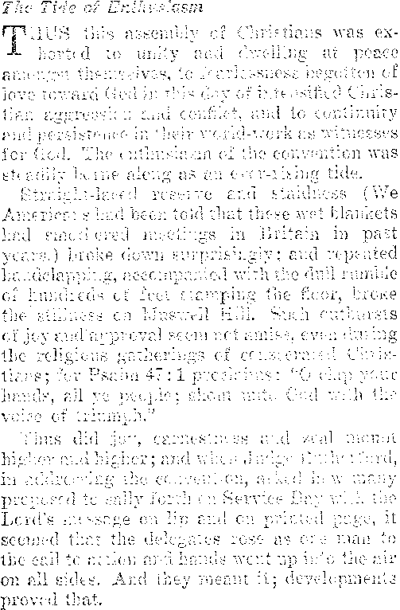
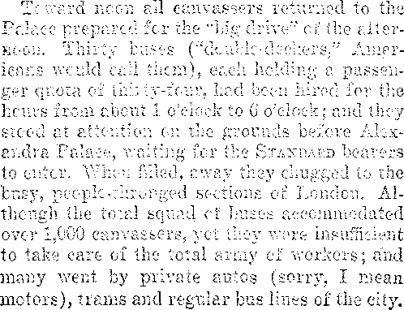

vt>S——... 2= ir= _7=z=eg^cia====^-~~—
Labor and Economics
Factory Chairs SIiot.LI Be Adjustable
Paid Vacations to Industrie,! V'o
Social and EdccathN l
Professional Bootlegging in New Jersey
Advising Abolition of Convict Leasing plan........
No Poverty Jie-.tns No Crime .... . . . .
Slaves Freed in Bu:th;i ........ . .
Finance- C" - w w 7 . ■. < w- : gw : ' n
i Humanity Fighting with Baek to the V.7:'; .....
! . Bus Lines in the Wi-sl ............. .
; Twentieth Atlantic Cable Laid ..........■. . . 775
I • Union of Church find Stage ............ .
i Political—Domi in:
[ Cardinal Bayes for Free Speech
| A World Filled with Turmoil ......... 777
| The World Wearies of Parliaments
i Paris-Beriin Air Service ...... .
.Czechs Alarmed at Fascist Growth ...... .... 778
Present Migrations in the World
Agriculture and Hu.- dan :.:;y Persimmon Trees and Fruit
Home and Health The Power of oIkdical Superstition
Religion and Pit:’.of— . .
Sidelights on the London Convention
’ Published every other Wednesday at IS Conrari street. ih-w’-wn, X. I’., U.S.A., by
j . wooirwoirnr. i:uhgings & martin
[ Copartners and Proprietors Address: 18 Coneord Street. llrooklyn, AT. I’., U.S.A.
I CLAYTON J. WOODWORTH . . . ILlhnr ROBERT J. MARTIN . Business Manager
I WM. F. HHDGIXGS . . Rcc’v a nil Troas.
1 Fivk Cents a Copy—.$1.00 a Year Make He.'.iittancbs to THE GOLDEN AGS
I Holies to Sebeei iliere: We 1’0 iw:. as ;; ride, .. ■ < a card of acknowledgment for a
! renewal 01' for a now sebw-injitio’.. A renewal blanl; (rarrying notice of expiration)
I will be soot with the journal One month before Lie subscription expires. Change of
i address, when requested, mn.v be expected io. sippear mi address label within one month.
Foreign Ori icr.s; ; liritieli.....3-1 Craven Terrace. Lancaster Gate, London W. 2
Cana'lien.........T-o-lb Irwin Avenue, Toronto, Ontario
Aiietratm-inn....... 403 Collins Street. Melbourne, Australia
South African......6 belie Street, Cape Town, South Africa
Entered as second-class matter at Brooklyn, X. Y., under the Act of March 3, 1879
Volume VII Brooklyn, N. Y„ Wednesday, September 8, 1926 Number 1SS
t-.................... —............ —......-.................... . ,!Mj
No Improvement in Tax Situation
WHILE the federal government reduced taxes 1,974 millions between 1919 and 1924, state and local governments were increasing them by 1,847 millions; so that, as far as the small taxpayer is concerned, lie has received scarcely any benefit. The reductions in federal taxes were largely of benefit to those who paid the largest taxes.
Tremendous Increase in Productive Power
TWENTY-FIVE years ago, in the United
States, the production of a ton of pig iron required fourteen hours labor of one man; today it requires but two hours. Twelve years ago the production of an automobile required 1,260 hours of work per car; now it requires but 230 hours. Each worker now produces an average of eleven cars per year.
THE Chamber of Commerce of the United
States calls attention to the fact that the presidents of many of the most important corporations in the United States are lawyers. Among the corporations thus governed are the Steel Trust; Burlington, Union Pacific, Cotton Belt and Monon Railroads; Pullman Company; Prudential, Mutual and Metropolitan Insurance Companies; Linotype Corporation; National Biscuit Company; Packard Motor Car Company, and many others.
OF THE 100.000 chain stores in the United
States, 50,000 are in the hands of only seventy-five organizations; it is estimated that they do about 12 percent of all the grocery business in the country. Chain drug stores, it is estimated, carry 20 percent of the trade, while chain shoe stores now market 75 percent of all the shoes sold.
THE Chamber of Commerce of the United
States, while conceding vast potentialities of trade with Russia, and tacitly admitting that it would raise the living standards and the welfare of 150.000.000 Russians, lias formally declared against participating in such trade on account of previous seizures of American property, and because of Soviet practices and theories in general.
Humanity Fighting with Back to Wall
TN A.\ address before the Chamber of Commerce of the United States, O. II. Cheney, New York banker, said:
Installment selling is the recognition (unconscious very often) of the fact that high pressure selling competition has used up the consumer’s dollar, and that each industry must fight for the dollar of next week— and the dollar of next year.
Distribution of Wealth in U. S.
HPHE Federal Trade Commission reports that
1 percent of the population of the United States owns 59 percent of the wealth; 13 percent of the population owns 90 percent of the wealth; and 87 percent of the population owns but 10 percent of the wealth. The same figures show that agriculture employs 40 percent of the population and gets 14 percent of the national income, which is figured at $70,000,000,000 per year. One-third of the entire wealth of the country, estimated at $353,000,000,000, is owned by corporations.
Factory Chairs Should Be Adjustable
THE New York State Department of Labor J- has issued a bulletin pointing out that the short girl in a factory needs a seat that can be raised, the tall girl a scat that can be lowered, and that the scat should be saddle-shaped, sixteen inches wide and inclining one-half inch to the back; that they should be twelve and one-half inches from front to back; and that bench tops should be not over five inches thick, to comfortably admit the knees of workers.
Continued High Prices for Food
URING the World War everybody that had anything to' sell found how to charge for it, and it seems hard to forget the lesson. In March, 1923, the increase in retail food prices over March, 1913, was 43 percent; but in March, 1926, the increase over retail prices for Mar^h, 1913, was G5 percent. The short potato crop last year had a very unfavorable effect on food prices for 1926.
rPlIERE is a great army of gum-chewers in the United States. Reports submitted by the United States Department of Commerce show that in America last year about fifteen packs of gum were consumed for every man, woman and child in the land; or about seventy-five cents worth. The total value of the gum consumed was $90,000,000. It takes 2,000 workers to make this quantity of chewing gum.
AT AN expense of millions of dollars Chicago is gradually improving its lake front which seventy-five years ago was presented to the Illinois Central Railroad Company. No one could foresee in 1850 that the property which at that time no one wanted, because of the expense of maintaining breakwaters, would later become worth, hundreds of millions. Chicago is looking up. Its new Union Station, shared by the Pennsylvania, Burlington, Alton, and St. Paul systems, is one of the finest structures of the kind in existence.
TAE director general of the Red Cross Societies calls attention to the fact that the
Vv orld War, the epidemics, the earthquakes and the o trier msasters which have overtaken the earth since 1914, have resulted in the death or serious injury of one-tenth of the population of the whole earth. How well this agrees with the Bible descriptions of the time of trouble Such as never was!
IT NOAV appears that there is no rush to the larger cities after all, but that what seems like a rush to the cities is mainly a freak of government bookkeeping. Every time a village grows to be over 2,500 population, the entire community is lifted up bodily and put'over into the city class, though the old town goes right along the same as it always did. The whole country is growing; that is all. Actually, there are as many people in the country districts now as there ever were; and, in fact, the proportional increase in urban population is only that of the population as a whole. These are the conclusions of those who have most recently studied the problem.
rDHE New York Times contains a story of the sudden rise of a dishwasher to fame. Happy at his task, his sweet baritone voice rang out in song from the window of a hotel kitchen. An opera manager, always on the lookout for talent, found him, and dragged him forth to the light of clay. Now his voice is being trained and he is being fitted for the stage, all because he sang while doing his work, whereas some folks would have been grumbling over the task. Girls, better think about this!
Baptists Angry at Their Betrayal
APTISTS, angry because the schools of their denomination have fallen almost wholly into the hands of the monkey worshipers, have issued a manifesto in which they say with much heat:
When it is remembered that far the greater portion of the money that made these schools possible was given by men who never had the slightest doubt as to the inspiration and authority of the Bible, and who never in their lives raised a question concerning the deity of Christ, it is nothing less than a sacrilegious outrage that Modernism shall play the cuckoo, capture the nests built by others, and lay the eggs of unbelief in the same. ’
rpiIE New York World has an interesting story of a girl in Hunter College, Henrietta Eidelsheim, who, although deprived of the use of both hands by an. attack of infantile paralysis, has nevertheless contrived to work her way through primary school and high school, doing all her work with a pencil held in her teeth. Henrietta aspires to be a journalist or a designer.
IN THE Yellowstone National Park the roads are kept free from nails, bolts, wire and scrap metals by the occasional passage over them of an automobile fitted with a powerful magnet. Now if somebody could devise a machine that would pick up bits of broken bottles, or that would automatically enforce the prohibition laws, automobilists would be happy. Broken glass is still with us.
SOMEBODY started the story a little while ago that the Ford Company is beginning to feel the pinch of competition, some other concerns having found out how to make low-priced cars in quantities, too. However, nobody need waste any sleep worrying over Henry’s finances. The net profits of his company in the past seven years were over $526,000,000, which is slightly better than $20,000 per day. If Henry economizes and eats plain food he ought to be able to get along very well for a time.
Paid Vacations to Industrial Workers
TpITIIER through acts of legislation or through collective agreements between employers and employes, practically all European countries except France and Belgium have accepted the principle of paid vacations to industrial employes. The development of this movement has been rapid during the past few years.
Cardinal Hayes for Free Speech
TT IS good news that Cardinal Hayes is for free speech. He has written extolling in high terms the greatness of Thomas Jefferson, and Jefferson stood first, last and all the time for free speech. The popes are on record as opposed to free speech. But Cardinal Hayes is for Jefferson; and of course the only reason he. could have for standing for Jefferson at this time is to show that he stands for what Jefferson stood for, namely, free speech.
SEVERAL men now living have made tha trip around the world in an hour; for encircling the North Pole in an airplane or an airship may be considered as going around th© globe. Jules Verne had his hero go via Suez, Singapore, Yokohama and New York in eighty days. Later that very trip was made in seventy-two days by a woman and by a schoolboy. A little later the globe chasers began to go by Moscow and Vladivostock, and the time was cut to thirty-six days. Now, by further reducing the size of the circle, they have made it in less than an hour! But this, of course, is not a bona fide trip around the habitable world; it is merely a small-sized circle around the world’s end.
Professional Bootlegging in New Jersey
N. N HONEST officer in the federal prohibition enforcement service in New Jersey has had to give it up. He claims that when the bootleggers were due to bring in a good-sized haul of liquor at Atlantic City his boss would summons him to headquarters in Newark and keep him sitting around doing nothing until the liquor was safely landed. On one occasion he was sent to Camden to watch for trucks coming into the state with Pennsylvania beer; but he made the fatal mistake of going a little out of his way and nabbing some trucks loaded with New Jersey beer, which made his superior officer so angry that he would not speak to him for several hours.
Advise Abolition of Convict Leasing Plan
THE Jefferson County, Alabama, grand jury, after scoring the warden for cruelties culmi
nating in the murder of a prisoner, said:
Disclosures have been substantially verified and are conclusive to our minds that coal mines operated with convict labor by the state furnish too many opportunities to indulge in the most inhuman and brutal forms of punishment by officials toward convicts, and among the convicts themselves; and that its value as an instrument of reformation, which should be the main object of all legal punishments, is so small as to ba negligible.
TN AUSTRALIA the eucalyptus tree has been known to send roots over one hundred feet through a narrow crevice in limestone in search for water, whereby alone it may live. There ara hundreds of thousands of eucalyptus trees in California. Other trees besides the eucalyptus seem to have the ability to scent water at a distance. Roots of poplars often find their way into sewers and water pipes, through pin holes so small as to lead discoverers to wonder how the rootlets ever found them.
TT IS increasingly apparent that the Jew’s, once supposed to be wholly given to trading, are returning to the land. The largest cattle raiser in Kentucky is a Jew, the largest grape grower in Ohio is a Jew, the largest raiser of ducks on Long Island is a Jew. A 30,000 acre wheat farm in Kansas is in the hands of a Jew. One of the largest hothouses near New York City is owned and managed by a Jew. About 7,500 Jews now till approximately 1,000,000 acres of land in the United States.
THE New York Times contains an interesting article cm astronomy, devoted to a discussion of the new stars, styled novas, which at times appear in the sky, only to disappear from view at a later date. These novas are really suns which explode, in some instances hurling their gases outward at. the rate of a thousand miles a second. In ten days a nova has been known to increase to 700,000 times its bulk.
IF YOU want to die suddenly, make a habit of flying into fits of anger; the wilder the fits the better. This will cause you to be sick. Your blood will become filled with poison. Your heart will beat so violently that you will feel the strain for days. In the midst of it all you may get a hemorrhage of the brain, apoplexy; and away you go, leaving the world better off.
IN FIFTY years New York has wrought a great transformation in the care of its babies.
Fifty years ago one-third of all the babies died, and there was no child welfare work worthy of the name. Now only one-sixteenth of the little ones die. This is bad enough, in all conscience; hut four out of five have been saved, and that is something, anyway.
TpXPOSING the naked body to the direct rays of the sun, without any intervening glass,, produces marked improvement of health, even when the exposure is only two minutes per day. In this statement naked means naked, without any bathing suit to interfere. Too long an exposure is dangerous; for the ultra-violet rays,, which are destructive to germ life, are also destructive to all life, if used excessively. At. Washington the Bureau of Standards has been working to devise a carbon arc lamp which will diffuse ultra-violet rays, for use in hospitals. These rays are helpful in tuberculosis, skin diseases, infected wounds and many other serious germ ailments.
WHEN you see that this or that business has been organized, take a. lesson from the fish business. It was unorganized, and the price of smoked whitefish at the smokehouses was-16c to 18c a pound. Then it became organized into a beautiful trust, and the price was jumped to 40c a pound. The effect of this upon the people can be readily appreciated.
MANY people who have visited San Diego, California, with its marvelous scenery and a climate which is as near perfection as it seems possible to have, consider it in some respects the very best place in the United States to live. San Diego, is never hot, never cold; and it is literally true that crops around there mature every month in the year. But, strange to say, San Diego has the largest suicide rate of any large city in the United States, being four times the Brooklyn rate. Men face the problems of life less courageously than women; the male suicides are three to one.
SOMEWHERE in the Bowery of New York City there is a place where a man who wants to enter the beggar business can have his arm taped and bandaged to his side so skillfully that he can pass very well for a cripple. One got into trouble with the police recently, and when they searched him they found an extra arm. The judge gave him six months in the workhouse, so that he could exercise it.
TWO small boys in the state of Washington have just made a profitable study of bee culture. They bought four colonies of bees from their father, and by using up-to-date methods and pure stock made $42 above expenses, while no other bees in the neighborhood made anything, and some even had to be fed to keep them alive. “The father of the boys is now taking lessons in bee culture himself.
A FIJI island chieftain, visiting the United States, makes the claim that the customs of bobbed hair and short skirts were imported from the ladies of the Fiji Islands, where they have been the rule for many years. .Fiji ladies use charcoal instead of white face powder. Whether that, too, will be adopted here remains to be seen.
fpiIE West is covered with bus lines which go everywhere the railroads go, and to some places the railroad cannot reach. And they make about as good time as the railroads, too. This is giving the railroads a hard class of competition to meet. The busses are even competing for through travel between points seven hundred miles apart. There are two lines between Kansas City and Denver, and at least one between Portland and San Francisco. There is a number between San Francisco and Los Angeles.
ONE might imagine that the wonderful development of wireless would put the cables out of commission; but not so. There is room for all. Indeed, business is so plentiful that the Western Union has just laid a new cable, connecting New York and London direct. It is the twentieth Atlantic cable, and has eight times the capacity of any other cable now in use.
THE busiest of waterways is New York harbor. Not only is New York one of the most beautiful harbors in the world, but it is the best lighted and the busiest. Day and night, Sundays and holidays, its waters are being crisscrossed with ocean liners, tramps, tugs, barges, naval and pleasure craft, police and fire boats, floating elevators and the ever-present ferryboat, com< monest of all. The waters of New York harbor carry 148,000,000 passengers a year.
HpHE farther Health Commissioner Harris gets into the milk and butter scandal in New York City, the worse he finds things. His latest conclusions are that New Yorkers are buying daily about 75,000 pounds of water, which is very intelligently but not very honestly mixed with their butter for the purpose. Water at fifty or sixty cents a pound should pay a pretty good profit to somebody.
FROM a small port, ruined by the great storm of twenty-seven years ago, Galveston has become one of the greatest of world ports. Eighty-eight vessels may load at her docks, and over 10,000 freight cars find room on her wharves. The port can store 5,000,000 bushels of grain and 1,325,000 bales of cotton. There are special facilities for handling coal, oil, sugar, sulphur and bananas, as well as cotton and grain.
TN THIS country we do not believe in the union of church and state, but now we do have a union of church and stage. The leading figures in this new piece of business are said to be Father Donahue, representing Cardinal Hayes; Rev. Dr. Cadman, head of the Federal Council of Churches in America; and two other reverends. The name of the new organization is the Church and Drama Association. It expects to make a hookup of the church and movie business.
Doctors Foresee End of Disease
AT THE 160th annual meeting of the New Jersey Medical Society, recently held in Atlantic City, several addresses indicated the hopes of doctors present that Bright's disease, dropsy, high blood pressure and heart ailments, hitherto regarded as incurable, might be cured or prevented. All are agreed that rational diet is the road to health and life. Dr. Durant, prominent New York scientist, believes everlasting human life quite possible.
Killing Mosquitoes by Airplane
rOHE Rockefeller Foundation reports great success in. attempts to destroy mosquitoes .in Italy and Sardinia by the cheap and speedy method of dusting th<> surfaces of lakes and pools with a mixture consisting of nine-tenths common road-dust and one-tenth Paris green. Mosquito Breeding was stooped and malaria almost annihilated in the districts treated.
Unusual Experience with a Snake
A WOMAN in York County, Pennsylvania, ■T-h- went to her chicken house, looking for eggs, when a huge blacksnake, over seven feet in length, leaped from the nest and wound itself around her neck and arm. She ran nearly a mile for help, with the snake coiled about her neck and arm, and was near collapse from pain and shock when the reptile was killed.
Will There be Any Summer Next Year?
TJkbbert Janvrin Browne, student of ocean currents, claims that America is even now practically surrounded with cold water and will be by next year; with the result that, cold and backward as has been the summer season of 1926, it will be much worse in 1927. He predicts that government measures will be necessary in order to save the people from starvation.
Jazz Jars a Refined Musician to Death
A BRITISH musical director, a one-time leading cornetist of the continent, who had on one occasion played for Queen Victoria, recently visited Coney Island, in company with his nephews. The so-called music of the jazz bands distressed him. He lifted his hands in an appealing way and, saying to his nephews, “That isn’t music,” dropped dead from the strain upon his heart. It would seem that some of the jazz performers could have been better spared.
THE Americal Legion is planning a peaceful invasion of France in September, 1927. It
is planned that 30,0’90 veterans of the World War shall make the trip, in a fleet of twenty-four luxurious vessels. The Legion is so planning the trip that the entire cost per individual may be as low as $300. The object is to celebrate America’s entrance into the war.
The Pennsylvania Primaries /COMMENTING on the flood of corruption un-LC earthed in connection with the Pennsylvania State primaries, the New York Evening World says:
If we have reached the conclusion that it is perfectly proper for mon of immense wealth to buy offices and to buy legislation and to buv the government it is time for the American 'people to go into a court of moral bankruptcy and apply for a. receiver.
The World sees the need of the Lord’s kingdom, “the desire of all nations.”
THE close relation between poverty and crime
is revealed by conditions in the town of Garnavillo, Iowa, located in one of the richest farming communities of the state. The village has no poor, with the pleasing corollary that it has no jail. It has had no arrest for so long that the oldest inhabitant cannot remember when one occurred.
ONCE every year a man is expected to buy a straw hat, and once every year the man resolves never to do it again. Straw hats are stiff, unwieldly and prone to become easily soiled and weatherbeaten. They are heavier and hotter than light-weight felt hats. The wind blows them off. They are no good in a rain storm, and no good anyway. Away with them!
RESEARCHES of the Department of Labor have shown that radium emanations cause death to workers brought in constant contact therewith. Persons engaged in fine work, such as painting luminous watch dials, are especially susceptible. In one plant six deaths have occurred in two years, traceable directly to radium emanations. The blood changes; the workers get excessive fatigue, headaches, irritability, dizziness and anemia.
What Spiritists Expect in 1928
THE Manchester, England, Chronicle, contains an article by the editor of the Occult
Review, a spiritist organ, in which the gentleman says, in effect, that all the evidence which comes to his desk indicates that toward the end of 1f;28 the demons will be unchained, the most awful war of all time will sweep Europe from end to end, a war in which everybody will be involved, and from which none may escape. While not attaching much importance to any information received from such a source, we nevertheless quote two interesting sentences from the article:
The psychic messages received through independent mediums all over the world, and the prophecies of some of our foremost astrologers, all go to show that civilization will be saved from utter destruction only by the visitation of some devastating seismic catastrophe which shall shake the warring nations out of their madness and compel them to call a halt. The forces of evil, however, knowing their time is short, will endeavor to engulf as many as possible before, to use an allegorical expression, they are bound for a thousand years.
Spiritual Laundries and Sweat Skc-ps
A LONDON ,■journalist reports that sni ril iml istic seance lie was inforn
at
- spiritualistic seance he was informed by
Lord Northcliffe or somebody else that the spirits of the departed not only live in houses and have flowers, musical instruments and clocks, but that they have solid bodies and wear changes of clothes! So? Well, then, they must have spiritual laundries or washwomen; and obviously they would have sweat shops, too, in which to make the clothes. The demons love to make fools of any who will heed their prattle.
THE poet d’Armunzio declares that unseen hands have been playing upon the piano at the country house where he is staying. He alleges that the playing drowned the sound of near-by church bells. It was his idea that the shadow7 form which he saw and which did the playing was that of Liszt, the great composer. The demons are trying to deceive Mr. d’Annunzio. Their chief amusement is in trying to convince people that the dead are not really dead, as the Scriptures declare them to be.
Reverend Bourchier Fears Spiritism
Reverend Basil Bourchier, one of London’s most popular preachers, says very truly:
The unsettling effect of spiritism on all who take it up, can be viewed only with the greatest concern. Promising to open the door to the beyond, has in many cases only opened the door to the madhouse. Not one single ennobling word or message has ever come to the inquirer. ,
All that Mr. Bourchier says, and much more, is true. Spiritism is demonism, the work of evil spirits, and is in no sense the work of the spirits of those who are dead. Every alleged com-munieation with those who are dead is a lie, according to our only chart, the Bible.
TN HIS address to the Yale Graduating Class, J- President Angell of Yale University said in part:
It is into a world disturbed in all its deepest convictions that you are about to enter, a world a trifle wistful as its gaze turns backward to the golden past, a world wavering and uncertain of its spiritual destiny. Government and education, art, industry, ethics and religion—all are infected with the spirit of unrest. Extremes of fashion in attire which contravene previous canons of modesty, liberties of deportment between men and women which seriously transgress preceding ideas of propriety, looseness and vulgarity of speech which ..are offensive to even rudimentary good taste, these and dozens of similar circumstances, suggest a relaxation of social standards'which, while not intrinsically immoral, easily leads to misconduct. Although the issues are obviously different in detail, there is little ground to doubt that in substance the unrest in social and political life is all of a piece with the relaxation of standards in morals and the revolt against religion,.' and for the present purpose they may accordingly be grouped as one.
The World Wearies of Parliaments
A GAINST its own best interests the world has wearied of parliaments and is busily throwing its affairs into the hands of dictators. Baldwin could be a dictator in England any time he likes, France is ready for one, Spain has de Rivera, Italy has Mussolini, Greece has Pangalos, Poland has Pilsudski, Rumania has Averescu, Hungary has Count Bethlen, Turkey has Kemal Pasha and Persia has Reza Khan. If the Lord did not interfere, as He will, the cause of human liberty would be dead in another decade, or oven less.
Finding the Way Back to Paradise
MANKIND is slowly finding the way back to
Paradise. In the garden of Eden man lived by eating fruit. After the Flood, and until recently, his diet has been largcdy meat: and his life has been cut short. Now he is eating more fruit, and his life is lengthening. In Britain it is estimated that every citizen eats either an orange or an apple three times a week. He would be still better off if he ate three times as much fruit, as is the ease here.
Mexico Seeks to Recover Citizens
VALUING her citizens as her greatest asset, Mexico seeks to secure the return to Mexico of some 200.000 Mexicans who are now living in the United States, Mexico believes that the return of these Americanized Mexicans would be of great benefit to the country as the returned wanderers would almost certainly bring with them ideas and practices which would improve the farming and other methods of the country. Mexico not only is seeking to recover her old citizens, but is aiming to save the new ones; and to that end pure milk is given, free of charge, to any mother in Mexico City who applies for it at the distributing stations erected for the purpose.
ON MAY 26th of this year air sendee was opened between Paris and Berlin; planes passing in both directions and landing their mail, passengers and freight on schedule time. Stops are made at Cologne and Essen enroute, and the time required for the trip is eight hours. There were no initial ceremonies, but both services were well patronized,
Czechs Alarmed at Fascist Growth
Czechoslovakia, alarmed at the growth of fascism within its borders, is taking steps to combat this peculiar form of anarchy now spreading over the earth. An organization composed of ex-soldiers of the World War, teachers and others, has been formed; and it is stated that the government will be approached at once to see what it proposes to,do to prevent the same thing happening in Czechoslovakia that has happened in Italy and elsewhere.
Mussolini boasts that democracy is dead in Italy. No doubt he tells the truth, for he is the man who killed it, Mussolini and his crowd have now abolished all unions and organizations having views differing from their own, and have organized the whole country into thirteen associations, all under government control, Employers are put in one union, laborers in another, and so on with artists, artisans, lawyers, doctors, journalists, teachers, etc., all under the control of the government. A more effectual plan for killing liberty deader than a door nail could not possibly be devised. Now watch it spread to the ends of Christendom.
Wickersham’s Opinion of Mussolini
Mn George AV. Wickersham, referring to Benito Mussolini as the greatest menace in the world today, is quoted as also saying:
There exists in Italy today a condition of absolute tyranny Under the government there has come about a suppression of free speech, a destruction of the freedom of the press, and a total absence of individual liberty. How long if v ill be before the situation arrives at the exploding point, none can tell. There is, however, a disposition to fear that when Mussolini begins to feel that his control of power is slipping, he. will seek to save his prestige, by holding out before the eyes of his subjects a program of territorial expansion.
Fascists Try to Prevent Free Speech
TpASClSTS have undertaken to try to prevent tree speech in Switzerland. Some Swiss Socialists were having a meeting at which they denounced Air. Mussolini as a murderer. Fascist i came in and tried to break up the meeting. Alter a fight they were arrested. Now Mr. Mussolini’s government has served notice on Switzerland that if any more anti-Fascist meet-tings are permitted in Geneva it will withdraw from participation in the League of Nations.
All Institutions Must Show Crucifix
ONE more step has been taken by Mussolini to show that he is working hand in hand with the pope. He has issued orders that hereafter every institution in Italy must exhibit the crucifix, including all universities and colleges, and even the Academy of Beaux Arts. The AMtican organ has expressed itself as well pleased, AVhy not ? It was all planned long ago.
No More Hand Organs and Monkeys
THE Italian foreign office has issued orders to refuse passports hereafter to all persons intending living abroad and making their living by the use of barrel organs, monkeys, bears or other animals. The foreign office believes that Italian dignity has been lowered by these musicians.
Present Migrations in the World
ITALIANS are migrating by the millions into . France, Argentina and Northern Australia.
The East Indians are migrating into Central East Africa. The Central Africans are migrating southward into British possessions. The Chinese are roving northward and southward. The British are coming to Canada and Australia. The southern Negro is moving north.
THE New York Times contains interesting details of the amazing progress of Armenia, one of the eight federated Soviet republics. The new country (it is only five years old) has perfeet freedom in language, education, police ad- ■ ministration, postal system and a national university at Erivan, its principal city, with a library of 200,000 volumes and four separate faculties in medicine, agriculture, political science and pure science. Erivan also has a conservatory of music, a textile factory’ with 3,000 employes and many other surprising evidences cf progress among a people almost blotted out by the Turks during the World War.
Afghanistan Improving, even if Slowly
Afghanistan, population 6,000,000 and one of the most backward countries in the world, is slowly improving, despite the great difficulties placed .in the way by the fanatical old Afghans who wish nothing new. Irrigation works are being constructed in three places; European physicians are treating the sick in the capital, Kabul; Italians have begun silkworm breeding; Germans have begun cotton aud sugar culture; and mining engineers and elm exploring the country with a view to a ing its metallurgical possibilities
sts are
■ertain-
Africa’s Wild Animals Face Extinction
APPARENTLY the world is to be largely if not completely denuded of its wild animals.
So many hunters of large game have visited Africa in recent years that the large game is being all killed off. A noted large-game hunter recently visited what was once a district famous for its lions, but saw not one on his whole trip. The African elephant is well nigh extinct. Perhaps enough specimens will be saved to provide a few more generations with samples, to be seen through iron bars; but the wild beasts have evidently had their day. Appeals are now being made to stop hunting Africa’s wild animals.
TN FIVE years Kemal Pasha has dethroned
the Sultan, abolished state religion, overthrown the Moslem caliphate, abolished polygamy, abolished Oriental headgear, removed the veils, from the women, closed the Moslem schools, put the people into western clothing, made Turkey a republic, built a new capital, and opened the mosques to women.
fTTHE leader of the Druse rebellion in Syria, in a message to the Associated Press, said:
The allegation that we are waging war against the Christians in our .beloved Syria is false, and every fair-minded man in the Occident should be told so Our revolt is the result cf atrocities committed by French colonizing agents, who have violated the sacred rights of our country.
The message denies again and again any past or projected attack on Christians who mind their own affairs and keep out of the conflict.
Bombardment cf Damascus Continues
SINCE October, 1925, the French have not ceased to bombard the Druse sections of Damascus with batteries of artillery and airplanes which drop large quantities of high explosives. Damascus is being gradually reduced to ruins. One-third of the city is reported as already destroyed, with the other two-thirds practically lifeless. France is administering the affairs of Syria under a mandate from the League of Nations. It is engaged in showing the world how the Syrians should be governed.
THE New York Times reports the success of a British expedition for stamping cut slavery and human sacrifices in parts of Burma where hitherto it has been unsafe for white men to come. The liberty of 3445 human beings was obtained at a monetary cost of 19,000 rupees. The natives have been in the habit of keeping their human sacrifices in stockpens for two months before slaying them. They were disappointed at not having one final human sacrifice before discontinuing the custom.
Sidelights tm ill e London Convention ByF. W. Franz
«rpiIAT international convention at London" . —the bare mention of it makes the face of every Bible Student who attended it light up with a happy smile, reminiscent of that which was worn during the sessions of that gathering of consecrated Christian people. It is a great inward refreshment just to live that convention all over again in one’s happy memories,
God has a people in the earth today who are strictly devoted to Him and to the service of His cause. For the sake of this people it is written in God’s Word: (iI will guide thee with mine eye [wisdom]’’; “Commit thy way unto the Lord; trust also in him, and he shall bring it to pass." The God of earth and sky made good these promises to His consecrated ones who assembled in the old world’s greatest city from May 24 to May 31 of this year.
The international convention of the International Bible Students Association was doubtless timed by the Lord for London, England, this year; and that it was well-timed mark the report hereinafter given. In his closing address at the convention the Association’s president remarked that endeavors had been made to hold an international convention in the United States of America this year, but all efforts were estopped. Thereupon the decision was cast in favor of making London the site of the international gathering for 1926,
But rumblings, portending a coming labor disturbance in the British Isles, were heard. When the convention dates had been definitely fixed and announced through The Watch Tower, the official organ of the I. B. S, A,, and when now all duo preparations were well under way, the threatened striking of British miners went into effect. Then followed the general strike and tie-up of transportation and industry throughout Britain.
The leaders of both parties set their jaws and proposed to make it a fight to the finish. The situation took on an ugly form. Throughout the days of the first week it dragged on, and then into the second week, Meanwhile the Cunard S. S, “Tuscania” was preparing to-sail from New York harbor the end of the second week with a contingent of twenty-eight American ’delegates to the International Bible Students convention aboard,
ANCELLATIONS of ship passage to England were being reported in the papers; and the burning question was: If the “Tuscania" does sail, will the American delegation sail with it? Then the king intervened (Was it the king of England or a greater King than any earthly monarch?)—anyway, King George declared that there should be no fight to the finish; and on Wednesday, May 12th, just two days before the “Tuscania” was scheduled to sail, the New York radio service announced over the ether that the general strike had been called off.
The cry now ivas: On with the convention; across the Atlantic with the American delegation! Little did the convention party realize that the time had come for something to be done by the Lord’s organization upon “the seat of the beast’’ (Revelation 16:10), that the position of London in the Devil’s organization was due to be exposed in 1926, and that consequently all obstacles had to be cleared from the path of the convention.
Friday, May 14th, just ten minutes before midnight, the “Tuscania” cast off from its New York pier with a joyful party of Bible Students aboard. For them the convention really began aboard that ship, but time and space do not permit telling about their daily meetings and witnessing out on the briny deep.
Talk about nasty weather! They had it in London—before the convention. The London Bible Students told about it, and the prospects of good convention weather looked as gloomy as that which marked the close of the International Eucharistic Congress of the Roman Catholics which met last June at Mundelein, Ill., forty miles west of Chicago. Approximately 800,000 to 1,000,000 Catholic worshipers, so the papers claim, gathered there under the open sky to participate in the processional which wras to climax and conclude that loudly heralded Eucharistic congress. As the pope’s legate to the congress was carrying the “ostensorium”, containing the “host” (a piece of bread), in advance of the processions, and as devout Catholics Avere genuflecting- and parading one hundred thousand at a time after the “host”, then, according to the New York Times:
A rainstorm came up with a. sudden summer bluster.
Rain fell in torrents, followed by hail. Thunder came in sharp, crackling reports as lightning flashed across the sky. The storm lasted but twenty minutes. . . . There 'were drops unusually large. In a minute the drops increased to a cloudburst, the rain mixed with large particles of hail; and there was net a soul but was soaked to the skin.
But not so in London; nature took an abrupt change and favored the city with, fair weather. The I. B. S. A. convention opened under a beaming sun and closed with sunshine in the sky and in the heart. While thousands of eager Londoners were standing in the epen for hours waiting to get into London’s largest auditorium to hear the public lectures of the convention, and while Bible Students were abroad in the lanes and byways and suburbs of London, joyfully advertising King Jesus and His kingdom, the rain stayed until the work was over.
IN MANY respects the Alexandra Palace was an ideal location for trie convention. Like a city that is set on a hill and that cannot be hid, this famous structure is located on a commanding position on Muswell Hill, on the outskirts of London, and affords a grand panoramic view of the northern section of London spreading out below. ,
Like the 144,000 saints with the Lamb of God, described in Revelation 14, who stand on the peak of Mount Zion and above the world of mankind whom, they are to bless, so were the thousands of Bible Students who assembled in the Palace. For the time it became a house of God. The Palace is still an imposing structure, but must have been very attractive in the day of its prime. It has been standing since the days of Queen Victoria’s reign, and during the World War many German prisoners were interned there.
In the center of the Palace is the Great Hall, running north and south; and with its great organ and choir at the north end, and its stately colonnades, it resembles a cathedral interior. West of the Great Hall is a square court, containing the Italian Gardens. On the east side toward the sunrising, is the Concert Hall, running east and west. In it the convention was held. This hall receives its illumination from the heavens through the skylighting overhead, and during the entire period of the convention heaven’s
light sufficed. Not a single artificial light was turned on during any service, morning, afternoon, or early evening. _
Toward the -west end of the hall was the speakers’ platform, fronted by a semicircle of beautiful flowering plants, massed up high and yielding sweet perfume. Suspended above the platform was a cluster of .four loudspeaker horns, to broadcast the utterances of the speakers to the conventioners. There were also two such horns on the stage in the adjacent theater to the north.
Long banners bearing appropriate Bible texts in large letters hung on the walls, while above and some distance in advance of the speakers’ platform there was suspended the largest banner, with the Bible Students’ year-text: “BLESSED BE THE LORD OUT OF ZION.” Wondrously was this text fulfilled at the conven-vention. The late Pastor Charles T. Russell lectured in the Alexandra Palace about fifteen years ago, using the topic: “Where are the Dead?”
In the large vestibule or section which led to the convention hall there stood a booth of Japanese design. It served as the location of the Enquiry Bureau and of the Service Department headquarters. On banners hung about tins booth were to he noted the mysterious letters: “G. O. S. 0. S. 0.” They seemed to say “Go-soso” ; and it was anticipated that they meant something like that. At any rate we were prepared for any eventualities.
THE convention was truly an international one. Delegates were there from various
European countries, as well as from various cities and towns of the British Isles. Some came from the Dominion of Canada. The Americans from the States numbered forty-two. I remember meeting a delegate from Australia, also a colporteur from South Africa, besides the manager of the South African branch. Even Ethiopia was represented; there were four colored delegates all the way from New York City.
Thousands more were in attendance in prayers and good wishes; telegrams, cablegrams and messages were received and read from Manchester, Glasgow, Dublin, and other British, points; from Winnipeg, Canada; Oslo, Norway; Bergen, Norway; Stockholm, Sweden; Helsingfors, Finland; Copenhagen, Denmark; Berlin, Germany; Athens, Greece; Singapore, of the Malay States; from the I. B. S. A. headquarters staff at the Bethel in Brooklyn, N. Y.; from Monrovia, Calif., Philadelphia, Penna., and other points in the United States.
The colored congregation of Bible Students in New York sent this message, which evoked applause: “May London realize that God is visiting her,” to which may be adjoined the thought that if London did not identify it as of the Imid she surely felt that something had struck her sorely, especially all day Saturday and Sunday night, as hereinafter related.
The actual attendance at the convention reached about 4,000, which is very good considering the conditions, especially the withdrawing of convention rates by the railroads and the hardships that the late general strike had produced. Although the coal strike was and is still on, yet numbers of Bible Students who are coal miners and members of their families came.
I remember there were seventeen from the little Clydach class, in the mining region of southern Wales. But they came, these friends, so great was their zeal for the Lord's house, even though it was necessary to prepare homemade marmalade and sell it, as one sister did to provide expenses for her husband and herself. With many it was a question not of pence but of pounds, so some said.
J. Hemery, the manager of the London branch of the Watch To web Bible and Tract Society, served as convention chairman. He was assisted by R. II. Barber from the New York headquarters, and W. Dey—his is a Scottish name but he is managing the Society’s branch at Copenhagen. These also gave addresses at the convention. The other speakers on the program were Messrs. Senior, Gillatt, Walder, the manager of the South African branch, Bowland, Young, the manager of the Spanish branch at Madrid, Batchelor, Franz, R. A. Johnson, Swain, Martin, the business manager of the New York headquarters, Lloyd, Pinnock, Scott, Guiver, Burton, Richards, Harbeck, the manager of the Berne (Switzerland) office, Robinson, and Judge J. F. Rutherford, the Society's President, and well known to readers of The Golden Age.
Giving Sanctimoniousness the Ha-ha
THE discourses by these speakers were up-to-date in their content and were well received.
They emphasized the fact that the truth of divine revelation has come to stay and..is marching on to victory; that the Lord God, whose name is Jehovah, is Himself taking a hand in human affairs during this crucial period and purposes to make Himself a name, not in earth only hut in all the universe; and that His great Vice-gerent, Jesus Christ, has gone into action against the arch-enemy’s monstrous organization; that deliverance is at hand both foi Christ’s true-followers as well as for oppressed humanity; that now the Lord's people are on top and the nominal preachers and clergy are beneath; that now is no time for inaction on the part of Christians nor for idle dreaming of dreams, as is described in Joel 2 : 28, 29, but that God’s faithful remnant must be as youths, youngmen of vision, who clearly see the Lord’s purposes for our day and detect His movements and works and joyfully align themselves therewith.
Standing as they are in a most dangerous position, because the great dragon-like organization of Satan is thirsting for the destruction of those who keep the commandments of God, they keep themselves in a safe position by renderingholiness unto the Lord; and holiness means not a sanctimonious, goody-goody, ne’er-do-amiss in thought, word, or deed attitude, but utter devotion to Jehovah God ; for it is only those who are active in God’s service as His witnesses that Jie promises to cover in the shadow of His hand. Hypocrisy and the holier-than-thou attitude which hide their despicable head under a sober, pious, long-frock-coated, solemn-voiced, devout-appearing- exterior were roundly trounced, especially by the Society’s president, much to the amused enjoyment and genuine approval of the convention. They gleefully hailed the, dawning for them of release from foolish Babylonish trammels, which retard activity, and of greater exercise of themselves in the liberty wherewith Christ makes His own free.
As one conventioner testified in the London Tabernacle the Wednesday night after the convention : “I want to thank the Lord for the deliverance we have had from ecclesiasticism at this convention. I may be letting our American brethren in on some of our secrets over here,” ],c frankly stated; and then he told how on one occasion, when opportunity was afforded him to deliver a discourse, he was declared barred from the speakers’ platform because, forsooth, he was not dressed in ecclesiastical style but was clad in a profane gray business suit rather than in a sanctified long black frock coat.
Alack and aias for poor, holy-faced'sanctimony! Evidently he is in the throes of death over there among the Biilish Evils Students. Let us hone that they have buried him and that they are clone wnui imiiiicKing Satan s religious marionettes forever. '
Meaning of the Mystic Banners
IT WAS a service convention to the core. The first feature on the program Thursday morning was a Service Meeting, addressed by. four speakers. About. 150 British colporteurs were privileged to attend the convention, and there was one among them who had been a gypsy. The first speaker congratulated them on their privilege of being colporteurs and on their brave activity, and offered them words of encouragement and instruction.
Messrs. Johnson and Martin followed, and outlined the program of work for Service Day. A shipment of 117.000 copies of Judge Rutherford’s new booklet, Standard for the People, which had been turned out at Brooklyn headquarters by a force working night and day, had come across the Atlantic Ocean on the same ship that had carried the American delegation. It was announced that the plan was to sell these and other books on the streets of London “at a price”, said Mr. Martin, “that will make the preachers get scared and run.” And when he closed his remarks by naming the price, a “tuppence” (twopence), the convention went wild with enthusiasm.
It took Mr. Swain, the Service Director of the London class, to decipher the mysterious “Go-so-so” signs. lie chose it as the basis of his remarks and explained it to mean: “Go Out; Speak Out; Sell Out.” The convention set its hopes on carrying out this slogan, and when Service Day arrived they had equipped themselves for the fray by buying, cash-down, 110,000 conies of the Standard booklet.
Dec ivity, dawned fair and i - i 1 pent in house-to-house <> ,t- n a ”L a Ms went in every direc-_ i - irt of terrilory, some as . Berkhampstead was < < L v rd to the work. Over
v i i v ± J in London homes or
v ’ ' < on.
HERE never was such a raid made on London/’ reminiscently remarked an old pilot at Glasgow a couple of weeks later, “They’re still talking about it/5 another Scotsman ejaculated; and I imagine that “li’l old Lunnon town” did rub its eyes and wonder in amazement. Hundreds upon hundreds of Bible Students appeared simultaneously and without notice on the busy corners, at the marts, and around the subway entrances and exits, crying Standard booklets and, like newsboys, shouting “tuppence, tuppence” I
The London newspapers, catering to the influence of ecclesiasticism, had given the convention the cold shoulder as far as advertising the great public lectures of Judge Rutherford was concerned. Hence the Bible Students undertook the advertising of these meetings themselves, by distributing announcement slips to the passersby.
Piccadilly Circus (or, American, Circle) did not escape getting- the witness, nor even did Aidgate, the very heart of London, that mile-fcquare zone which is strictly designated as the city of London. Here a helmeted Bobby, whose tall stature towered above my “wee” five-foot four inches, soberly informed me: “No one can Bell or distribute anything on the streets in this Beetion without a very special permission from the Lond.on authorities. I have power to arrest you right now/’ he commented, but added considerately, “I don’t want to cause you any unpleasantness, and so I thought I’d just explain. You’ve brought your people too close.”
I moved down the street toward the one mile limit which he pointed out, but the other workers In this section were getting by with their selling, and consequently stayed at their posts. Hence tJie bus load of workers there in Aidgate quickly disposed of 576 books, notwithstanding that they were in a Jewish business district; and many erthodox Hebrews would not buy anyway because of Sabbatarian scruples.
The work done, the workers all returned to the bus by five o’clock. Toward that hour the tky darkened, and about five minutes before five S. light rain began to patter down. But the loaded bus had not gone far on its return run to Alexandra Palace when the rain ceased.
ONDON, big as it is, did not seem to have enough busy spots to accommodate those who had complied with the slogan “Go Out, Speak Out and Sell Out”. In many places they were stationed at no great distance from one another, and the passing throngs had to run a regular gauntlet. Some police officiously ordered them to move on. Some people became indignant.
One woman called a policeman and ordered the arrest of another with the books. But the policeman answered: “She is doing nothing wrong.” Then the woman called a man to her assistance; and though they both insisted on her arrest the policeman remained firm that “she is doing nothing wrong”. After the offended couple had passed on, the policeman turned to the colporteur with a smile, pulled back his coat and proudly displayed an I. B. S. A. cross-and-crown pin.
Two clergymen were sauntering’ along; and when a lady braved to offer the book to them, one of them burst out: “I’ve been insulted several times this afternoon by your people selling these books and talking to me publicly on the streets about God and Christ’s kingdom!” The lady replied that Bible Students love to talk about the Lord and Ills kingdom anytime and anywhere. Another clergyman, when informed that the literature was by Judge Rutherford, exclaimed: “What, that man again! That fellow had added years to my life.”
One man, evidently prejudiced by ecclesiastical influence, shouted, “To h—1 with Judge Rutherford!” Then a Jew, learning that the book was by Judge Rutherford, seized the hand of the colporteur and kissed it. A Danish delegate, unable to express himself in English, had himself placarded with English signs to make known what he was selling, and thus went forth with the message to the “maddening crowd”.
A delegate, unable to' canvass from house-to-house, took a position on the street and sold fifty booklets in an hour. Another sold twenty-one booklets to passengers in a “double-decker” bus; while of course, the conductor was busy upstairs or down as the case might be. The workers went at it energetically, with the thought ever in mind: “Speak Out and Sell Out I” and I heard of some who worked till nine thirty and even ten p. in., and placed from one hundred to two hundred copies.
THERE was no meeting at the Palace in the evening of Service Day, but the workers went to their abiding places with the happiness and joy which activity in the service of their God brings. London had been taken by surprise, but such strategy was not without Scriptural precedent. Gideon, the famous warrior of ancient Israel, did not ask permission to assail the Midianites in the dead of the night. He simply took them by surprise, and the hostile host fled when Gideon’s gallant three hundred broke their pitchers and raised aloft their torchlights and blew their trumpets.
I am reminded of these words from Abraham Lincoln’s classic address at the Gettysburg battlefield: “The world may little remember what we say here, but it can never forget what they did here.” Likewise it may soon have been forgotten what was said at length at the London Convention, but what was done there—and that Resolution—shall long be remembered and serve as a stimulus to ardent zeal in God’s cause.
The introduction of the resolution, entitled “A Testimony Addressed to the Rulers of the AVorkl”, came as a glad surprise about 4:28 o’clock Friday evening. The president of the I. B. S. A. was on the platform, explaining the significance of Isaiah 49. The opening verse he showed is addressed to that class of fearful, cover-seeking Christians pictured in Revelation 7 as the “great multitude”. Those Christians, however, who are fearlessly and faithfully publishing the kingdom tidings abroad, are to participate in a work toward this great multitude of “prisoners . . . that are in darkness” under ec-clesiasticism.
As verse 9 declares, they are to tell these prisoners to come forth and show themselves on the Lord’s side. But more than this, the Lord’s witnesses were to extend their testimony even to the world rulers; and the 7th and 23rd verses give grounds for hoping that some of the rulers will take heed and use their influence to turn the minds of the people to the fact that Jehovah is God and that His mandates are to be obeyed. Not, of course, that we are seeking for the support of these rulers, but we must be faithful in giving testimony to high and low alike. Then that noble document was brought forth, the “Testimony”. After reading its seven clauses aloud, Judge Rutherford moved the adoption thereof. It was also moved to send a copy to all rulers of the earth. There was a lively stir throughout the convention hall, and the motion was carried with enthusiasm.
A gentle rain fell Sunday morning; but at the sessions of the convention this day the highest attendance turned out, and there were about 200 in the adjacent theatre listening to the program through the two loudspeaker horns on the stage. Early in the afternoon 184 Bible Students made a public profession of their consecration to the Lord by doing as Jesus had done, being immersed; the immersion taking place in a pool on the grounds nearby.
The rain had stopped, and the conventioners later .in the afternoon moved in the direction of Royal Albert Hall for the great public meeting of the evening. Hundreds had volunteered for service inside and outside the colossal auditorium, and long queues formed outside two hours before the hour of the lecture. At 6:16 p. m., a quarter of an hour before the time advertised for the opening of the hall to the public, the signal was given to throw open the doors.
It was a cheering sight to see the crowds of people pour in through the doors and stream down the aisles, while the great thirty-four horse-power organ with its nine thousand pipes filled the auditorium with music. By 6: 30 p. m., the great circular auditorium had its ten thousand seats occupied. A large throng was reported as standing outside unable to enter.
HAIRMAN and speaker appeared on the platform at 7 o’clock, and the vast audience joined in singing the hymn, “Eternal God, Celestial King.” A prayer, an announcement that the Harp Bible Study Course would be on sale that night for two shillings, the Standard booklet being added as a concession; and then Mr. Hemery, the chairman, read the Resolution. The cluster of ten loudspeaker horns high above his head sent out the Avords on beams of sound in all directions.
A brief introduction followed; and then applause broke out as Judge Rutherford stepped
forward. His voice was calm as lie began: “In support of the resolution read in your hearing, I desire to submit some argument.” A modest statement, but the audience caught its force and set itself to hear. Then there thundered forth through the amplifier horns one of the most astounding, comprehensive, cogent, and dauntless lectures I have ever heard delivered.
Surrounded as in a Boman arena by those thousands of auditors in that circular building, practically all of them Britons with traditions of British world glory alive in their minds, the Judge, like Elisha when surrounded in the city by the Syrian hosts, flinched not, but dared to be true to his position as a witness for Jehovah. Readers of The Golden Age who have seen the Resolution and the masterful argument in support thereof, as published in this magazine, were undoubtedly impressed with the unequivocal directness and daring therein displayed. . '
Picture yourself seated near the speaker, on the platform of Britain’s largest auditorium filled to overflowing, and hearing for the first time the delivering of that scathing denunciation of religious hypocrisy, that bold tearing away of the mask, that expose of beastly world power in its lair, that appeal to world rulers to turn from their wickedness, and that moving and glowing description of the glories and blessings of God’s incoming kingdom.
Twenty thousand British ears were tingling : auditorium, and other thousands
1 n the outside by means of the broad-
< the message on the street. How would
■ it ? One’s body was in a tension.
Would the speaker dare to say what was fram-i nind and forming on his lips ?
irway aioft in this enormous hall, and under the grand dome surmounting it, hung a canopy spreading out gracefully IiJce an inverted parasol. It seemed to assure one of the words of Jehovah: “I have put my words in thy mouth, and 1 have covered thee in the shadow of mine hand.” (Isaiah 51:16). The thought was strengthening. But what elation of feeling there came when waves of applause surged again and again, stamping with approval the most audacious and cutting points of the Judge’s flow of irresistible logic1
Early in the lecture the speaker openly charged: “The clergy have been used of the enemy [Satan] in practising fraud.” Then the history of man was rapidly reviewed; sham religion and sanctimonious hypocrisy wore traced on down from the days of Enos, Adam’s grandson, when men began to presumptuously cal! themselves by the name of the Lord (Genesis 4: 26), until the present time.
The Indictment of Briitiiii
F”pHE seven heads of that beast described in Revelation 17, and symbolic of seven mountains or dominant world powers, passed before us on review—Egypt, Assyria, Babylonia, Mcdo-Persia, Greece, Rome, and the British Empire, which looms up as the seventh and greatest of all these world powers. Claiming with the other nations to comprise Christendom, or Christ’s kingdom, it is incriminated as having called itself by the name of the Lord, with resulting grave responsibility to itself. Why? Because it is the seat of civilization, the very bulwark thereof; and, London being the capital city of the Empire, “here Land the Judge's words- rang out with strong emphasis] is the very scat of the beast.” (Revelation 16:10) When the applause bad died, the speaker continued : “I chaige and purpose to prove that the British Empire, while claiming to rule by divine right, has rejected Jehovah God and His kingdom; and that the clergy are the ones responsible for it.”
Jehovah God had been, and was even now, calling upon the rulers and the ruled to recognize Jesus as earth s new and righti n' Kung and to render obedience; for the fulfilment of Jesus’ prophecy, establishing the end of the world, had taken place. The clergy were duty-bound to take note of this fid filment of divine prophecy and to call the attention of their allies, political and financial, to it.
The British Empire also was the main power to make possible the return of the Jews to Palestine, and this was in effect a recognition of the fulfilment of sacred prophecy. All nations were now entangled in the meshes of universal distress, not even excluding the British Empire. Why should the Lord permit a great time of trouble to come on Christendom if it were His own kingdom? But it is not If is. The claim made by the clergy that the nations rule by divine right is false. .
In Daniel’s prophecy the Lord foretold that there would be an effort to cement the world together, which effort, resulting in a compact of nations, was a farcical substitute for Christ’s kingdom. Yet the Federal Council of Churches presumptuously hailed it as the world’s savior by misnomeriiig it “the political expression of God’s kingdom on earth”. This statement was a blasphemy on the part of that group of religious leaders who preached and labored for pay in support of that saturnalia of international bloodshedding, the World War; and to them the Lord’s trenchant utterance was addressed: “In thy skirts . [“Yes,” said the Judge, “and they do wear skirts!”] is found the blood of the poor innocents.” Then lie addl'd : “No longer can the people look to the clergy as safe teachers. As a lawyer 1 submit (what no lawyer in this audience can deny) that they are estopped from denying the Bible as the divine Word.”
Indictment of League of Nations
THE League of Nations was identified as that “eighth” king of Revelation 17:11, which should come out of the remnants of the seven world powers, and the British Empire as the seventh and the main support of the League. “LET BRITAIN WITHDRAW FROM IT TOMORROW, AND IT WILL GO DOWN IMMEDIATELY,” declared Judge Rutherford amid applause. Pandemonium broke out when lie termed the Devil the father of the League, the British Empire its mother, and the other nations in the League its wet nurses.
Psalm 2, verses 1 to 9, was read as descriptive of the current activities of the nations. The solemn warning of verse 9, di rected at rulers and judges, was stressed. “The most reprehensible of all the ruling factors is the clergy,” said the speaker. “They were under obligation to know the truth of the Bible and to tell the people about it, but they have caused the rulers to commit spiritual fornication and have turned the people away from God. The political and commercial ruling factors have admitted the clergy to their councils, but now they are realizing that a fraud has been practised upon them and the clergy will duly be hated in a more substantial manner.” (Applause)
The manifesto of prominent British preachers, published throughout the world in January 1919, was read, to prove that the leaders of the ecclesiastical section had recognized and pointed out indisputable proofs of the end of the world.
“I challenge all the preachers of Europe now,” the Judge shouted defiantly. “By this published manifesto they have had notice served on them by men of their own crowd that the end of the age has come.”
The interesting question was then interjected as to why God forced the close of the World War in 1918. Answer was given that Jesus had predicted that after the World War and before the full end of Satan's world organization should come, “this gospel of the kingdom shall be preached in all the world for a witness unto all nations.” This witness is now proceeding. This is the reason for the existence of the International Bible Students Association. “When this witness is done, it will be done,” he declared, significantly. “And now all the nations are tramping on to the battle of the great day of God Almighty.”
^VXTIIAT does the ‘common herd’ desire?”
’ ’ Judge Rutherford asked. “Are there any clergymen in the audience? [I knew of one, from Texas, U. S. A., who was there hidden away in the galleries.] The people want peace, not war; they want life, they want liberty, they want happiness. [Applause] No government or system on earth can offer any possible remedy for the present condition of mankind. There is only one remedy. The time of deliverance has come. Let the rulers use their influence toward the people. There can never be a lasting peace until love rules the world.”
And then (to the writer) it seemed as if the fulminations of the raging storm of God’s wrath, and indignation had passed. The clouds that had hung heavy, rolling with thunder and crackling with lightning, were dispersed asunder; and lo! a gorgeous sunset diffused across the western sky; and a rainbow, radiant token of dawning peace, arched itself over the earth. The speaker’ began to paint in consoling and charming phrase the beauties and glories of the coming times of restitution. His voice trembled with emotion. The audience was touched and deeply moved. Audible expressions of blessing to God were heard; a scarcely suppressed shouting as men hailed the picture of their heart’s desire; and a warm, spontaneous clapping of hands as they rejoiced at the scenes of the good times described as just ahead.
“Millions now living will never c .e” was faithfully held up by the speaker as a watchword. The Lord is to judge the living ones first, at Christ’s kingdom and appearing. Then the words of Ezekiel 18: 27, 28,were read as offering hope to fraudulent clergymen; but the words are applicable to kings as well. “Then war will be abolished,” he said; and added: “I read in the newspapers today how America helped to win the war. Thank God I did not help any. I did not fight.” (Applause) The final picture given was that of the unmixed happiness that would spread over the earth and come to stay.
The speaker concluded: “I submit to this audience that our case is made out. The Resolution that was read is supported by the facts. Would to God that the world rulers would open their hearts to the Lord and get in the van before the people.” The vast audience enthusiastically rose en masse when asked to express itself in favor of such a government as described in the lecture. As they dispersed, the people took 1,877 pieces of literature with them, and handed in 134 requests for further information.
The Report in the London Daily News
IT WAS the biggest event of the day for London ; but next day the London papers carried nothing about it, except the Daily News. It devoted a full page to the Resolution and a synopsis of the lecture, together with an advertisement of Judge Rutherford’s Monday night lecture on “Palestine for the Jew—Why?” at the Royal Albert Hall. However, this space had all been bought and paid for at a costly sum of money. What wonder that at the Jewish meeting Judge Rutherford scored the newspaper world, saying, “The press in London has not the moral courage to publish the truth. But they can be bought with money.” The Daily News is a Liberal and non-conformist paper, having a regular circulation of 800,000. It has on a number of occasions published articles which were against the Bible Students.
During the closing sessions the London Manager, Mr. Hemery, said: “A light has been lit in London that shall never be extinguished.” Judge Rutherford, giving his farewell address, said with evident pleasure: “I am happy about last night’s meeting because, to use an American expression, the Lord ‘put one over’ on the Devil.” To him it seemed like a miracle that the public lecture was allowed to be delivered in full and that the full-page report had been gotten into the London Daily News.
“The Devil did not want this convention,” he continued: and then he recounted how convention efforts in America bad been blocked, then the capitalistic - governmental - labor trouble broke out in Britain at the psychological hour, and bad weather had raged as the convention time drew near, on top of which London’s newspapers closed up against the I. B. S. A. Notwithstanding this 800,000 copies of the Resolution had gone-out through the columns of the Daily Neves, and the greatest distribution of books on earth had been, accomplished during this convention.
not want to quit,” said Judge
’ ’ Rutherford in closing the convention. Calling to mind Philippians 3: 13, he urged the delegates to forget the past accomplishments and to forge ahead in the work before them. As expressed in Psalm 27:4, the faithful Christian desires to enter the Father’s house above and to behold His beauty, but there is a condition precedent to our going to heaven, and that is the keeping of our covenant with the Lord God.
God’s begetting us as His children is not like human begetting, we were told, but is in the nature of a contract between Him and us. This contract must be performed, and we must become conformed to the image of God’s dear Son, in this: “I delight to do thy will, O my God.” ■—Psalm 40: 8.
Holiness, an absolute devotion to the Lord, is required; but sanctimoniousness is a pious deception. (Hebrews 12:14) It is a question of “passion versus principle”; in other words, a being governed by some extraneous or external influence or being controlled by God’s Word. Patience, too, is essential; and by patience is not meant a mere mildness of temper or a weak submission under provocation, but “a determination to keep on serving the Lord and going straight on serving Him, and doing it cheerfully”.
Finally the Judge bade the conventioners to return in their-enthusiasm, saying, “Remember when you go home that you have something to. do.” He suggested that he might not be in position to come and see them again, but added, “I hope that this is the beginning of the biggest campaign ever conducted in the British Isles and, if necessary, I shall be willing to come back and fight with you in the front ranks for six months. The time is come for the preachers to gnaw their tongues for pain (Revelation 16:10), and let them hear the truth.”
The strains of the hymn, “God Be with You till We Meet Again,” now ascended; and as the last verse was sung the eonventioners waved their President a fond farewell. Above through the skylighting the warm sunshine streamed in upon the assembly, and seemed to be nature’s token of the warmth and light and cheer of God’s favor and loving blessing beaming upon this consecrated gathering.
THAT night the public meeting for the Jews at the Royal Albert Hall was a fitting anticlimax to the splendid success of Sunday night. The house was well filled, notwithstanding that an overflow gathering of Londoners had already heard the same speaker the previous night. Yet the people thronged the great hall on Monday evening until only the topmost gallery and the balcony just below it were not filled. Many typical Jewish faces could be distinguished in the audience that filled the arena and the great balcony round about it and the’three tiers of boxes. Two vocal solos, the melody of the Jewish national anthem, “Hatikvoh,” and the aria, “Comfort Ye,” from the “Messiah”, were sung. The London Manager again served as chairman and introduced to the audience the new’ book, Comfort for the Jews.
Assuredly the Devil had not wanted this Bible Students convention, and he tried to make it hard going for Judge Rutherford in his lecture this night. A number of things seemed to conspire to irritate the speaker and to annoy the hearers. Shortly after the statement of Jewish faith had been read, the valves of the marconi-phone system for broadcasting the lecture gave way. The operators advised that two minutes would be required to adjust the mechanism, and the organ started playing an interlude to fill in the time. The audience however stuck to their seats with patience.
When the Judge had resumed speaking, suddenly and -without warning a shrill voice shrieked through the hall: “You are telling lies !” It was a woman in the' balcony. The speaker shouted out: “'Shut up”; but the woman, as if obsessed, complained and sputtered until the ushers w’ere ordered to take her out. “It didn’t cost you anything to get in and it ’won’t cost you anything to get out,” came the words from the platform. The woman was forced out with a struggle.
The audience, especially English sensibility, might have been shocked by the apparent roughness of the scene; but the Judge rose to the occasion with the words: “In the garden of Edon the Devil vrnrked against the human race by using a woman, and he has not stopped using woman today.” The F.idmnce gust way to vigorous applause.
THE speaker opened his lecture by a reminiscence, telling how7 he had early become tho friend of the Jew. While still a young attorney, he had taken the case of a Jew7, and the Jew had won out. “Palestine for the Jew-—Why?” was the theme of the lecture, and the question -was promptly raised and answered: What right has the Jew- to Palestine? By right of discovery? No! The Canaanites had the land first. Nor could the Jew7 now- claim the land on the ground of acquiring possession; for it is recognized internationally that according to the law of the Statute of Limitations thirty years non-occupa-tion of a land annuls anyone’s claim thereto; and the Jewish nation have been separated from their beloved land for almost 2,000 years.
Then on what ground did the Jew’ have the right to claim the holy land? The reply was: “On the law of Jehovah God.” God had declared in His Word that the Jew7 should have the land back at this time, and God’s Word is law7. He is the supreme and only Lawgiver. The articles of the orthodox Jew’s statement of belief were then read to show7 that orthodox Jewry accepted Moses the prophet, and the law7 and records compiled and published by him.
A Jew7 having official connection with one of the Jewish organizations w7as seated in one of the boxes. As this Jewish creed, wdiich begins with the w’ords, “I believe,” was being read off, he was distinctly heard to say: “I do, I do, I do,” to the various items of belief. He readily purchased a copy of Comfort for the Jews at the conclusion of the lecture.
t ■
Roasting Pious Roosters
K MOTHER question was now raised: Among Christian people (so-called), who can support the Jew in his claim to Palestine'? It was clearly demonstrated that neither Modernist nor Fundamentalist preachers could do so on the basis of their creeds and their course of preaching hitherto, although now in view of Zionistic successes “some of the preachers are trying to get into the band-wagon”. The Christian clergy, who had literally roasted many Jews at the stake or in bonfires during the mediaeval period when ‘Tig church” rode the saddle, were themselves now “roasted” from the platform in the hearing of the Jew—a fitting retribution from heaven!
It was amusing to hear hypocritical ecclesiastics called pions “roosters”. The Judge had also called them that in his lecture the night before, ) p+ -'(>!< r ' ita. igly. This epithet was a ’ < < ' ' - c v r. Nevertheless, although
it sounded one wrownig a brick at the preachers, yet they sensed that it was a good sobriquet for the preachers: and they clapped their Hands with1 zest.
' “Just what did the Judge mean by calling the preachers ‘roosters’? a Scotsman asked me some time later. One has just to remember how a rooster likes to roost and crow loudly and strut around as the redtopped boss of the barnyard to get the full force of the illustration, and to see that it really is not simply American slang. It reminds me of our visit to Westminster Abbey the next afternoon. We arrived just as the Episcopalian service was in full swing. After the ecclesiastical show was over, we sightseers moved down the aisle of the transept toward the nave. There we encountered a friend from America. She had had a front seat during the performance. Without anything from us to cause her to bring up this point, she said: “Yon know Judge Rutherford called the clergymen ‘roosters’. If you had been sitting up front where I was and had seen those clergymen in their red suits sitting on those seats there in the nave you would have thought that they were roosters, too.”
To come back again to the main theme: Our champion of the faithful Jews’ cause stated that the only one who can support the Hebrews is the man who believes that the Bible was written by holy men cf old, that it is the inspired Word of God, and that every word of it is true. He pointed out (1) that the Jew is the only one who is entitled to the land of Palestine: (2) that the time has come for the Jew to get possession thereof, and that all the opposition in the "world cannot prevent him from going into the holy land; and (3) that those Jews who obey God, who believe His Word, and who follow His instructions will be restored not only to the land but to health and life everlasting,
GOB’S promise to Abraham, that to him God would give the land for a possession, was now discussed. Before the fulfilment of this promise the faithful patriarch died. But God’s promise must and will be made good; and the Judge said with conviction in his tones: “You Jews shall see Abraham back on this earth, and that before very long.” Then it would be that Abraham would enjoy his title to the land by actually occupying it as his God-given possession. '
All ulterior motives of trying to proselyte the Jews'were disclaimed by the speaker. “I do not want to see any Jew in any congregation, but want him to learn his Bible, to believe it, and then to follow the Lord.” He showed why a Christian with motives in harmony with God’s Word can be altruistically interested in the Jew. He was not seeking their financial support. “I do not want your money. Put your money into the fund for rebuilding Palestine.” This statement was greeted with great applause. He appealed to the Jews to break away from their faithless rabbis and to turn directly to the Lord’s Word.
The meeting closed not many minutes before ten o’clock. The Jews gave good attention, and time and again they punctuated the lecture with applause. “Hear, hear, hear!” cried three Jewesses in one of the boxes; and when the Judge brought up some familiar event narrated, in* the Hebrew’ Scriptures they said one to another: “We remember that, don’t we T’ One Jew, speak-
to a Bible Student after the lecture, said:
A talk was grand, but, do you know7 Vvhat sounded to me inost beautiful of all? It was his frequent mention of the name of God, JEHOVAH.” No rvonder, when it is remembered that strict custom has made it practically sacrilegious for any Jew to repeat God’s holy name, for fear it should be profaned. And now for God's name to be spoken in such beautiful connections, establishing that Jehovah is the Jew's true and unchanging Friend brought joy to their hearts. Hundreds of copies of Judge Rutherford’s book Comfort for the Jews were sold to them that night, other literature also being disposed of to the audience.
Tuesday was another day of sunshine. With the object of taking advantage of all the publicity just given on the Jewish question, scores of the friends, including some who still tarried in London after the convention, went out calling from house to house in Jewish sections of London.' Many were their experiences, and othei hundreds of copies of Comfort for the Jewi and kindred publications were placed with both Jews and Gentiles.
The London Convention and all associated activities were now over. Divine blessing had been manifested throughout, even in respect to th< weather. But the next day inclement weather resumed, and the rain fell steadily throughout the day.
Persimmon Trees and Fruit By J. A. Bohnet
SOME sort of blight has come on the persimmon trees of southern and central Illinois, killing in some sections more than half the trees. The leaves usually turn reddish and hang on; but in some instances they fall off, leaving the tree entirely denuded of foliage. No one seems to know the cause of this destruction of luscious fruithearers. Persimmon trees very closely resemble the sassafras. They sometimes grow to large size, and are very productive.
In the region where the persimmon tree thrives there is not a creature, domestic or -wild animal, barnyard fowl or bird, that does not eat persimmons. Open a passage leading to a tree of ri pe persimmons and you will see every horse, mule, cow, hog, sheep, goat, dog and cat, as well as every feathered creature on the place, headed straight for that tree; and you are fortunate if you get for yourself any that fall on the ground.
If you undertake to eat a smooth-skin, apparently ripe persimmon, your mouth immediately feels disagreeably puckery, as though fixed for whistling; and a half hour later you will still be wondering how long this sensation is going to last. Persimmons are not edible until they have the appearance of a baked or rotten apple. Then they are luscious; and the more you eat the more you want.
In size the fruit ranges from one to two inches in diameter, and is in shape similar to a small tomato. The earlier’ variety ripens in the latter part of August, and the later variety is fit to eat only after a sharp frost; and the fruit usually hangs on the tree until after Christmas, long after the leaves are gone.
In the middle southern states, where the persimmon grows wild and most abundantly abounds, a person is privileged to enter anyone’s grove or yard and club off from the trees all the persimmons he cares to eat; they are as free there as are acorns in the northern states. Indeed, a southerner pays much less attention to this fruit than do northerners to nuts.
But the persimmon tree is usually spared when other trees are cut down in the clearing of land. It makes a fairly good stock shade-tree; it is often found to be the lone tree in the field or on the fence row, being small-twigged and scraggly.
There is also the Japanese persimmon that is cultured. Its fruit measures about three inches in diameter, and is in size, shape and color quite similar to an elongated tomato. It is practically seedless, and has the odor of boiled linseed oil. ■
The wild or natural American persimmon has from three to ten slippery dark-brown seeds, about the shape of a squash seed, that have a coaxing, teasing inclination of wanting to be sucked a long while. No matter how much of this fruit one may eat it brings on no ill effects. It can readily be shipped if each fruit is separately wrapped in paper, and will remain edible foi’ several days. Some people make pudding from this fruit, and some have made persimmon beer, both of which are delectable.
It is generally conceded that the opossum is the greatest lover of persimmons. It is claimed that you can feed an average-sized opossum, a two gallon bucketful of persimmons, then take him by the tail and put him into the bucket and he will probably no more than half fill the bucket.
The Power of Medical Superstition By G, R. Clements
“Vaccination is a monstrosity, :i misbegotten offspring of error and ignorance; and. being such, it should have no place in either liygeine or medicine. . . Believe notin vaclnation; it is a world-wide delusion, an unscientific practice, a fatal SUPERSTITION, with consequences measured today, 116 years after its birth, by thousands of dead and wounded, by tears, ami sorrow without end.”—Cablo Ruata, M. D., Professor of Materia Medico, University of Perugia, Italy, Nov, ISOS
^0HE was one of the most beautiful children I have ever seen. I had known her for some time, although slue was not a patient of mine. In fact she wasn’t anybody’s patient. She was never ill. She was a splendidly healthy girl, glowing with vitality, bubbling over with childish enthusiasm.
“Although she was but budding into young girlhood, you could visualize the sort of woman she was going to grow to be, strong, keen-minded, intelligent, a woman of quality, fit to mother a prince or a president. I used to call her the wonder girl.
“Then came the day when they bared her soft, well-rounded little arm and jabbed it with the virus point. She didn't want it done. There was ro need of it. And her parents fought against it. They knew that she had the health and strength that spells immunity to smallpox; but the authorities, the tools of the medical autocrats, insisted. So they injected into the blooming, perfect body the wicked vaccine virus, poisonous pus that comes from the sore of a diseased cow.
“And it did its deadly work. The poison sped through her system and the roses faded from her cheeks. She became a pallid, sickly, thing, grew rapidly weaker and weaker, and died! The authorities said she died of pneumonia, but I knew better, and so did a number of physicians who saw and discussed the ease. Her death was caused by the poison that was criminally injected into her blood.
“And as I looked upon the shrouded wax-like figure in the little basswood box, surrounded by blossoms that would have matched her budding beauty, I felt as though I were looking upon the helpless victim of a murder; and I solemnly and silently vowed to work, as long as I lived, to wipe out the superstitious, yea the criminal, practice of vaccination.”
# * * ' * *
The foregoing account of the fatal termination of the stupid, superstitious and inhuman practice of vaccination, which account is questioned by none except those who for good, substantial, and financial reasons, do not want to believe it, appeared in Physical Culture not long ago, from the pen of Simon Louis Katzoff, M.D., Ph.D., of Bridgeport, Conn., graduate in law, pharmacy and medicine, prominent physician, psychologist and author, who says that he would no more put vaccine virus into- a man’s body than he would put a bullet into his brain.
Before proceeding further with our story, it will be interesting and also enlightening to learn something about the substance used in the process of vaccination. What is it? Whore does it come from I How is it made ? When wo peruse medical textbooks for the cause of “disease”, all we learn is that the cause of disease is unknown.
William Osler, M. I)., who has been hailed by many physicians as the world’s greatest medical authority, has stated: “Of disease we know nothing at all.”
The similitude may be striking, but nevertheless it is true, that the same lack of knowledge greets us when we search in medical lore for answers to some of'the above questions. Of smallpox and vaccine virus, Dr. Osler says:
With our present knowledge of smallpox, it is not possible to advance a theory of the disease which conforms to what appears to be known and which is explanatory, of the mode of infection. V/e are ignorant. . . . Equally unknown is the vaccine virus used to produce the disease vaccinia which vaccination is intended to induce.
Thus we observe that the active principle of vaccine virus is a subject about which little is definitely known. More obscure seems to be the cause of the “disease” which vaccination is intended to immunize the body against. However, it is said that the vaccine used in this country at this time, originates in smallpox that is inoculated into calves; and this is admitted by the leading vaccine authorities.
The process of manufacturing vaccine is as follows: Calves or cows are the victims used for the purpose. The belly and flanks of the animals are shaved, then long slits are deliberately cut in their flesh. The seed virus, about which physicians admit that they know nothing, is then criminally rubbed into these wounds.
The poison thus inoculated spreads through the entire body of the unfortunate animal, thoroughly corrupting and contaminating its blood and tissues. Then nature endeavors to eliminate the pollution; the wounds fester, becoming ulcerating sores. The poisonous exudation from these running sores is scraped off, dried, placed- in jars, and then passed through a grinding machine, in which it is pulverized, being moistened while in the hopper by the constant dropping of glycerine upon the filthy mass.
By means of this disgusting precess of "transformation” the poisonous exudation from the filthy sores of sick cows becomes “pure glycerinated lymph”, according to the label, ready for use throughout the country for infecting helpless school children and credulous adults, and poisoning their bodies for life, at so much per head.- '
What is the object of vaccination? It is claimed by medical science (?) that the injection of the poisonous filth obtained by the above method, into the pure blood-stream of a healthy person, will render his body immune against smallpox, which might some day attack him.
This medical superstition has been perpetuated in every primer of physiology studied by school children, and is continually inculcated into the minds of the people from childhood to old age. In consequence of the steady .and thorough vaccine propaganda, millions of people now have a faith in the inhuman practice of vaccination that no earthly power could easily change.
On page 120 of his “Primer of Sanitation”, written in 1914 for use in the public schools of the United States, to be studied by fifth and sixth grade pupils, so that they may know “how to escape germ diseases and how to cooperate in conserving community health”, John W. Ritchie, the author, makes the following assertion which, however, seems to be wholly unsupported by facts :
Vaccination is an almost perfect protection against smallpox. In 1870-18*1, during the Franco-Prussian War, all German soldiers were vaccinated, while only a part of the French soldiers were vaccinated. Tn the French army there were 6,000 deaths from smallpox, and the French wornsded suffered heavily from the disease. In the German army there were cmlv 218 deaths from smallpox, and among the German wounded who lay in the same tents with the French wounded, not a single case occurred.
Before examining into the facts concerning the above, let us take an illustration which shows the ease with which a false belief may fasten itself upon a people. In the same decade that the fatal, superstitious “medical rites” of vaccination are being performed on “civilization” in order to drive away demon disease, let us observe a corresponding occurrence among unattended heathen who, however, are without doctors who have -studied the art of fighting disease by creating more disease, as do ours.
Here is a tribe of barbarous Incas in South America. We watch them from afar through our field glasses. The sky is clear, and the sun is shining brightly. In a certain mountain recess we see a group of their sturdy, young men marching. They have entered a broad clearing and have stopped. After a brief pause and ceremony, they seize one of their -companions and carry him struggling to a large, flat rock, on which he is stretched out on his back and firmly held by the arms and legs in the vise-like grip of his comrades.
Who is that tall, dignified man approaching? He must be one of the leaders of the tribe, for the multitude fall back and bow themselves to him. Just behind him comes another man, not quite so tall, leading an animal, a calf; perchance the most perfect calf they could find. We watch them closely. The calf is thrown to the ground and strong hands hold it fast, while the tall, dignified man bends over its body and plunges a long, keen knife deep into its throbbing side. He calmly washes the glittering blade in the torrent of red fluid gushing forth from the fatal wound, and then approaches the prostrate form of the man on the large, flat rock. For a moment all is silent and a short ceremony takes place. Then the man on the rock ■: violently, but he is held fast. The fall nr ids over him, with knife in hand. What is he mmgj Within a moment we see something moving in his hand. He utters an unearthly, blood-curdling yell and, holding the small, pulsating object, dripping with gore, high above his head, he offers it to the sun.
The struggles of the man on the rock have ceased: he is dead. His heart has been cut out of his body and offered as a sacrifice tc the smi-
god, in order that demon disease may be appeased and prevented from visiting and killing an}- of the tribesmen. The simple, ignorant people do not regard the act with any feeling of horror. Have they not been taught for ages and generations, from childhood up, that by killing one of their number and performing this gory ceremony, their lives may be saved from disease ?
As we turn away with horror and disgust from this barbarous ignorance and folly, we see the whole tribe falling on its knees and bowing with respect and reverence before the tall, dignified medicine man who has just committed the diabolical murder, but whom they regard as the keeper of their health and destiny.
We may suppose that the medicine man, being much more intelligent than the rest, knew this procedure was worthless, so far as the health and welfare of the tribe are concerned, and himself had no faith in it. But would he belittle his prestige and power by disclosing his own faithlessness to his people through any act, word or look? Would he make any experimentation calculated to disprove and destroy the healing faith instilled by this practice into the hearts of these simple, ignorant people? Never!
If he were a man of such courage and wisdom, what would the friends and relatives of the murdered victim do to him? Would he dare to face their anger? Would he even dare to face the storm of reproach, scorn, and persecution of his fellow medicine men, by denouncing the whole procedure as superstitious, fanatical and wrong? It would take a brave man indeed to do that.
A few brave souls of the past have had the courage and wisdom to go beyond matter and its reaction for their first principles, and have succeeded in breaking down the bars of enslaving superstition by trampling down certain ancient traditions. Such men become a positive force for good in the world. But since all progress destroys some ancient teachings and beliefs, and invariably imperils the position of the rulers and the leaders, it becomes highly expedient that the works of such outstanding men be resisted by the “elders and chief priests”.
All men whose lives reflect the truth and wisdom of God, instead of the superstition and tradition of man, are forced to take the hemlock, the stake, or the cross, while their destruction is cheered and applauded by the stupid rabble, who thus unwittingly aid and abet the heartless rulers of their liberties and their lives, in their work of obstructing progress and fastening more securely upon their ignorant necks the withering yoke of oppression.
How could we ever prove to an ignorant heathen people that their barbarous rite and sacrifice had no effect on health and disease? If any one of the medicine men, being more courageous and intelligent, than the rest, and desiring no longer to delude and deceive the rank and file, should declare himself against it, who would believe him if the rest of the medicine men vigorously defended their position and denounced the declaimer as a fraud and a fanatic, who had not at heart the good and welfare of the tribe, and was, therefore, a dangerous man?
Now if we should ask the natives for proofs of the effectiveness of their practice and ceremony, they would naively inform us in their simple way that a number of years ago their forefathers had neglected to perform the ritual to the sun-god, and that during the same year • multitudes of their people had been stricken and died of disease. That, to them, would be sufficient to demonstrate that this sacrifice to the sun-god is effective and necessary, in order to prevent destructive epidemics.
We have seen that into the simple, open minds of our children in school is instilled the thought that “vaccination is an almost perfect protection against smallpox”, and they are told that this thought is strengthened by certain figures, inserted in their textbooks, which say that in 18701871, during the Franco-Prussian War, the unvaccinated French army suffered 6,000 deaths from smallpox while in the vaccinated German army there were only 278 deaths from the same disease. . .
Who supplied these figures? Medical men who greatly desire the rank and file to believe in the infallibility of their methods. Are the figures true? In his book, “Nature Cure,” on page 193, 20th edition, 1922, Henry Lindlahr, M. D., answers the question as follows:
German statistics are more reliable than are those of any other country. In the. years 1870-1871 smallpox was rampant in the Fatherland. Over one million persons had the disease, and one hundred and twenty thousand died. Ninety-six percent of these had been vaccinated, and only four per cent had not been “pro-tectcd”. Most of the victims were vaccinated, once at least, shortly before they took the disease.
In 1888 Bismarck sent an address to the governments of all the German states, in which it was admitted that NUMEROUS ECZEMATOUS DISEASES, EVEN THOSE OF AN EPIDEMIC NATURE, WERE DIRECTLY ATTRIBUTABLE TO VACCINATION.
In his message to the various legislatures the great statesman said: “The hopes placed in the efficacy of the cowpox virus as a preventive of smallpox-have proven entirely deceptive.”
Realizing this to be a fact, most of the German governments have modified or entirely relinquished their compulsory vaccination laws.
In support of this statement, J. -A. Hensel, M. D., a German army surgeon, in an address at Salt Lake City, Utah, said: . .
I was on duty in Strassberg (Germany) when over, 2,000 case’s of smallpox were in the pesthouse, and every one of them successfully vaccinated but three months before. I mj self was laid up for five weeks with smallpox, though vaccinated the seventh time 1 In 1898 I witnessed the amputation of three aims and the discharge of four men from the army for general debility, all from vaccination. After this experience, I am convinced that vaccination is not protective.
In the Truth Teller of January 7, 1924, we read:
As a sidelight upon this very point: During the World War the sanitary system of Germany broke down, and there were many thousands of cases of smallpox. These cases were practically all among the older population (not infants), all of whom had received the “protection” of vaccination.
Helpless children are the victims mostly selected for the superstitious practice. E. 'M. Ripley, M. D., in a more recent issue of the same magazine, wrote:
The vaccination craft arc very busy in old Connecticut. Ignorance and cupidity reign supreme, and vaccination and general blood-poisoning are the apparent aim of our health boards. No healthy child is allowed to escape, and under the present law (providing for such) a physician’s certificate of exemption is not allowed to pass. Wholesale blood-poisoning is the rule and the harvest of disease and death goes merrily on, and the dollars it brings accumulate. It is a sad commentary on human intelligence.
The practice of vaccination corrupts and pollutes the blood-stream. Of this. Alexander AViidcr, M. D., editor of the New York Medical Times, arid Professor of Physiology of the U. S. Medical College of New York, observes:
.Vaccination is the-infusion of a contaminating element into the system, and after such contamination you can never hope to regain the former purity of your blood. Thus tainted, the body is made liable to a host of ailments; all cases of consumption may be as unequivocally traced to vaccination as effects follow' causes.
The most disastrous effects frequently follow vaccination. Dr. D. 0. Phillips, of Bessemer, Alabama, said recently for publication:
I visited a family yesterday and I witnessed the most horrifying sight I have ever. seen. Two children, girl and boy, I judge about ten and twelve years of age, who were raving maniacs from the effects of vaccination inflicted at school, and without the consent of parents.
R. T. Trail, M. D., writing in the “Hydropathic Encyclopedia”, gives this account of the effect of vaccination:
I have seen a most horribly loathsome case of scrofulous disease, in which the patient literally rotted alive at the age of fifteen from virus received when he was but three years of age.
Joseph D. Harrigan, M. D., says that vaccination is cue c । die “gods of medical idolatry”. ‘ . I Culture magazine, he says :
I the. Schick test are poppycock— m ww1 i 1 at that. They are gods of medical in it * erthedex altars the lives of thou-
ismx.s vi jjumau oemgs are sacrificed, and the lives cf thousands more imperilled. ...
After forty years cf conscientious and ethical practice as a physician, ... I have seen health impaired and life after life snuffed out or jeopardized by the use cf the fifty or mere vaccines and serums with which enterprising manufacturers have flooded the market.
In condemning the practice of vaccination as a deadly relic of the dark ages, Dr. Harrigan further declares:
The whcle damnable system cf vaccine and serum therapy is a crime against humanity. It began, untold centuries ago in India, where worshipers, of the smallpox goddess used to inoculate themselves in the presence of the image cf the gccdcss, with pus drawn from the seres of these afflicted with the disease—a filthy act of heathen superstition. ...
I began my professional career by unquestioningly subscribing to the vaccine and serum therapy; I practised it; I inoculated and vaccinated with gusto! The whole thing had just gotten a fresh start in the “"discovery” of the antitoxin for diphtheria. The world was electrified with the news. At last we had found the touchstone that would.’ finally cure all disease. ...
When instances cf the failure of vaccine and serum therapy first began to come to my attention, I was at first inclined to feel that such instances were mere exceptions. It was not till the evidence grew and grew
that I found myself forced reluctantly to the conclusion that practically the whole of the medical profession was as ignorant of the true cause of disease as the patent medicine quacks they so vehemently denounce, and that to their ignorance they add a bigoted intolerance that spells woe to anyone who seriously raises embarrassing questions. -
There is a published list of more than fifty “diseases” that result from vaccination. Among them are abscesses, arm disease (involving amputation), enlargement of the axilary glands, blindness, septicemia, cancer, convulsions, cowpox, smallpox,, diarrhoea, eruptions, erysipelas, foot and mouth disease, leprosy,- meningitis, paralysis, plague, pneumonia, scrofula, syphilis, tuberculosis, diphtheria. No person of a rational mind would demand more evidence than this, of the fallacy and the fatality of the superstitious medical practice of vaccination.
In each instance above cited—that of the little girl killed in a civilized country, and the heathen murdered on a pagan altar—the victim was nothing more nor less than a sacrifice simply to satisfy the stupid medical superstition of ancient tradition which, it seems, few people possess the power to shake off. The two cases differ in form, but not in fact. In either instance, if the ritual had not been followed, and a plague had swept away multitudes of people, the failure to perform the ritual would have been proclaimed by the medicine men as the cause of the disaster. But if the ritual is performed, and the plague sweeps away multitudes anyway, then the explanation is made, by the heathen medicine men and also by the modernized medical ‘•authorities”, that the intensity of the “disease” would have been far greater had the accustomed method been ignored.
It requires no more puerile credulity and idolatrous faith for the heathen to believe in the healing power of their sun-god ritual than is required for civilized men to believe that the poisonous pus exudating from the ulcerating sores of a sick cow is transformed into “pure glycerinated lymph” by being moistened with a few drops of glycerine as it passes through a grinding machine, and that the injection of this “pure glycerinated lymph” into the vital lifestream will or can render the living organism “immune” to “disease”.
It is written: “'Who can bring a clean thing out of an unclean? Not one.” (Job 14:4) But the principle that “a clean thing” can never come “out of an unclean” fails to percolate into the brains of people who are schooled, from infancy up, to believe that their health and their happiness, their liberties and their lives, are protected and preserved by the conscienceless “elders and chief priests” who, with evident pleasure, burn at the stake and empale on the cross the “dangerous fanatics” whose immaculate lives reflect the unrecognized truths and profound wisdom of the Infinite Creator, instead of the conventional customs, superstitions, and traditions of fallen man.
Whatever slight difference there may be between the customs of heathendom and civilization in this matter is obviously in favor of the heathen. Their performance destroys but one life, while those of modernized medical methods corrupt the blood and undermine the health of the whole civilized world! And yet we gaze with wonder upon “the vast progress of medical science”; believe that we are living in “the golden age of medicine”; and we view with abject horror the bloody sun-sacrifices of the barbarous heathen; while we ourselves practise their evil custom of guaranteeing “immunity” against “disease” in a thousandfold more destructive form, and enact laws to make the crime compulsory.
A Few Sensible Remedies
IF YOU feel that you need an iron tonic and blood purifier fill yourself up with spinach, Swiss chard, raisins and prunes. If you need a laxative go for the nearest supply of bran, figs, oatmeal, spinach, apples, rhubarb, prunes, tomatoes or apricots. If your system seems to be too much acidulated, head for the milk, celery, carrots, turnips, beets and string beans. Why not keep well by eating the things your system
needs? YTou have to eat anyway, and you might as well eat the things that will keep you well. People who eat plenty of citrus fruits, raw cabbage, green leaf vegetables, tomatoes, whole milk, butter and cream are seldom sick; especially if they get out in the sunshine a little every day, work reasonable hours, drink plenty of water, and sleep with their windows wide open, winter and summer. ' '
Bible Questions and Answers
[Radiocast from Watchtower WBBR on a wave length of 416.4 meters by Judge Rutherford.)
Question: Is there any place in the Bible where the word purgatory occurs?
Answwr: No.
Question: Does the Bible state that Adam had any daughters born to him?
Answer: Yes. In Genesis 5: 4 we read, “And the days of Adam after he had begotten Seth were eight hundred years: and he begat sons and daughters.” It is reasonable that one of these daughters became Cain’s wife; thus Cain married his own sister. This was not improper at that time, since the human race was not weakened with the marks of imperfection to the degree that it is today. The custom, however, would be very improper today, due to the fact that now the family imperfections would be very pronounced in the offspring.
Question: Have you any scriptures to prove that the priests, scribes, and other religionists of Jesus’ day conspired to kill Jesus?
Answer: Yes. In Matthew 26:3,4 we read, “Then assembled together the chief priests, and the scribes, and the elders of the people, unto the ’place of the high priest, who was called Caiaphas, and consulted that they might take Jesus by subtilty, and kill him.”
Question: Why did the priests, scribes, and Pharisees hate Jesus and seek His death?
Answer : Because they did not like the truth which He was telling to the people. The scribes and Pharisees pretended to represent Jehovah God, but Jesus plainly told them that they had rejected the truth and were of their father the Devil. In John 8:40-45 Jesus spoke plainly to these pious hypocrites: “But now ye seek to kill me, a man that hath told you the truth, which I have heard of God: this did not Abraham. Ye do the deeds of your father. ... If God were your Father, ye would love me: for I proceeded forth and came from God; neither came I of myself, but he sent me. Why do ye not understand my speech? even because ye cannot hear my word. Ye are of your father the Devil, and the lusts of your father ye will do. He was a murderer from the beginning, and abode not in the truth,' because there is no truth in him. When he speaketh a lie, he speaketh of his own : for he is a liar and the father of it. And because I tell you the truth, ye believe me not.” .
Question: Is it reasonable to believe that a person with an honest heart would resist the truth of the Bible?
Answer: No. The Master gave a parable in point, about the sower and the seed. The sower is the Master and the seed is the truth. In Luke 8:15, Jesus said: “That on the good ground are they, which in an honest and good heart, having heard the word, keep it, and bring forth fruit with patience.” And then He continued in the next verse, saying that those who received the truth would be zealous in telling others about it: “No man, when he hath lighted a candle, cover-eth it with a vessel, or putteth it under a bed; but setteth it on a candlestick, that they which enter may see the light,”
Question : Will all errors eventually be exposed?
Answer: Yes; absolutely. In Luke 8:17 wTe read, “For nothing is secret, that shall not be manifest; neither anything hid, that shall not be known and come abroad.”
Question: Has God a body?
Answer: Yes. The Scriptures tell us that God has hands, a face, eyes, and other things which are parts of a body. The Bible teaches us that there are spirit bodies. On one occasion the Lord permitted Moses to see His back. In Exodus 33: 22, 23 we have the words of the Lord to Moses: “And it shall come to pass, while my glory passcth by, that I will put thee in the cleft of the rock, and will cover thee with my hand while I pass by: and I will take away my hand, and thou shalt see my back parts: but my face shall not be seen.” Thus the Lord Himself says that He has hand, back parts, and a face, which must truly signify a body.
In 1 Corinthians 15: 40, 42-44 we read: “There are also celestial bodies, and bodies terrestrial: but the glory of the celestial is one, and the glory of the terrestrial is another. ... So also is the resurrection of the dead. It is sown in corruption ; it is raised in incorruption: it is sown in dishonor; it is raised in glory: it is sown in weakness; it is raised in power: it is sown a natural body; it is raised a spiritual body. There is a natural body, and there is a spiritual body.” Although God never had a beginning, never had a resurrection, yet this scripture positively states that there are spirit bodies. The greatest and most glorious of all spirit bodies is Jehovah God.
ter
. Question: Was Jesus God while here on earth, and was He ever equal to the Father?
i Answer: No, the Bible does not say so; it ■ 'declares to the contrary. In John 14:28 Jesus said, “My Father is greater than I.” The Scrip-‘ tures point out positively that in the future Christ Jesus will be subject to the Father, who alone is God. In 1 Corinthians 15:25 we read, /Tor he [Christ Jesus] must reign, till he hath put all enemies under his feet. . . . And when all things shall be subdued unto him, then shall the Son also be SUBJECT unto him, that God may be all in all.” In Isaiah 42:8 we read, “I am the Lord [Jehovah, Yah-iceh] that is my name: and my glory will I not give to another, neither my praise to graven images.” Jehovah alone is God. He is the Father of Christ Jesus.
, Jehovah God has always been superior to His Son in glory, and always will be.
Question : Are there any scriptures in the Bible that sanction the use and worship of images in the religion of God?
Answer: No; absolutely none. In Exodus 20: 4, 5 we read, “Thou shalt not make unto thee any graven image, or any likeness of any thing that is in heaven above, or that is in the earth beneath, or that is in the water under the earth: thou shalt not bow down thyself to them, nor serve them: for I the Lord thy God am a jealous God.” In Isaiah 42:17 we read, “They shall be greatly ashamed that trust in graven images.” In Deuteronomy 27:15 we read, “Cursed is the man that maketh any graven or molten image, an abomination unto the Lord, the work of the hands of a craftsman, and putteth it in a secret place.” In Psalm 97: 7 we read, “Confounded be all they that serve graven images, that boast themselves of idols.” Reason teaches us that it is foolishness to bow down to a stick of wood. Can wood > ar the prayers of the worshipers? Can the wood see? Has a piece of wood a strong hand that it can deliver a man in trouble? No. It is a wise course to worship God, who is able to hear and who is able to deliver.
Question : Is it true that skeletons have been found of men who lived 25,000 years ago ?
Answer: No. According to Bible chronology man has been on this planet for a little over six thousand years. Any statement by man which is contrary to Bible chronology is wrong.
Question : Why do some churches place so much importance upon taking the substance of Jesus’ body and blood as necessery to salvation and refer very little to the Bible?
Answer: The real cause of all misunderstanding of Bible doctrine is pointed out by the Apostle Paul in 2 Corinthians 4:4: “The god of this world [Satan] hath blinded the minds of them which believe not, lest the light of the glorious gospel of Christ, who is the image of God, should shine unto them.” A neglect of the study of the Bible will soon leave the individual open to the attack of the Devil, and the Christian is thus led into error. The Bible student knows from the Scriptures that the memorial of the Lord’s death should be participated in but once a year. God has provided a guide for the Christian, viz., the Bible. If one disrespects the Bible and is not guided by it, he of course does not receive the Lord’s blessing and is quickly drawn into error. In Isaiah 8:20 we read, “To the law and to the testimony: if they speak not according to this word, it is because there is no truth in them.”
Question : What was the reason that some Bible Students were imprisoned during the war, and their publications restricted ?
Answer: The answer is that the clergy, the preachers, influenced the civil authorities to imprison these Christians and restrict their publications. The truths of the Bible, as spoken b; the Bible Students, hurt the preacher business The creeds of the various denominations are not in harmony with the Bible. Letitbe remembered that the work of spreading the truth contained in the Bible is not the work of man; it is the Lord’s truth, and the time has come that the people should hear His truth. Jesus said concerning His followers at the present time, as recorded in Matthew 10:18, 20,22: “And ye shall be brought before governors and kings for my sake, for a testimony against them and the Gentiles. . . . For it is not ye that speak, but the Spirit of your Father which speaketh in you. . . . And ye shall be hated of all men for my name’s sake: but he that endureth to the end shall be saved.” The real reason why many preachers oppose the Bible Students is that the former do not like the truth, which the Bible Students declare.
BWIth issue Number 60 we began running Judge Kutherord’s new book, || | “The Harp of God", with accompanying questions, taking place of both Advanced and Juvenile Bible Studies which have been hitherto published.
544 “The mystery” is' the Christ, the anointed class:—Jesus the Head and His body members—• designated in the Scriptures as the seed of Abraham, according to the promise. (Colossians 1: 26,27) It is the repeatedly announced purpose of Jehovah that through this seed all the families of the earth shall be blessed. (Galatians 3: 8,16, 27, 29) Jehovah has devoted much time and effort to the development of the seed of promise. If, therefore, there is to be no opportunity for full restoration of mankind, then the time and effort spent in developing the seed of Abraham has been wasted, and the promise of blessing through this seed, is meaningless and void. If we believe the Scriptures above cited, that God’s word cannot return unto Him void, then we must know that His purposes cannot fail.
545 The Lord Jesus went away to prepare a place for His bride, the church, which is the seed of Abraham through which the promised blessing of mankind must come. He promised to return and receive His bride unto Himself. He has come again, as the Scriptural evidence herein cited dearly and conclusively shows. If there is to be no opportunity for the restoration of man to the condition which Adam enjoyed before he sinned, then the second coming of the Lord must fail in one of its primary purposes. That one of the primary purposes of His second coming is the restoration of the human race, is definitely stated by the inspired witness: “God . . . shall send Jesus Christ, which before was preached unto you; whom the heaven must receive [retain, hold] until the times of restitution [restoration] of ali things, which God hath spoken by the mouth of all his holy prophets since the world began. For Moses truly said unto the fathers, A prophet shall the Lord your God raise up unto you of your brethren, like unto me; him shall ye hear in all things whatsoever he shall say unto you. And it shall come to pass, that every soul, which will not hear that prophet, shall be destroyed from among the people. Tea, and all the prophets, from Samuel and those that follow after, as many as have spoken, have likewise foretold of these days.”— Acts 3:20-24.
640 Added to this positive statement of the inspired apostle is the testimony of all the prophets foretelling the time coming for the restoration of the things that were lost through the disobedience of Adam.
547 Enoch was the first of the holy prophets. (Jude 14,15) Then followed Jacob (Genesis 49:10), Moses (Genesis 3:15; 12: 3; 13:15; 18: 18; 22:18; Deuteronomy 18:15,19; 30:15), Samuel (1 Samuel 2: 6), Job (14:13-15; 33:1930), David (Psalm 22: 27; 30:5; 37:11; 46:10; 67:1-7; 72:3,4,6,10; 86; 9; 93:2; 96:11-13;' 98:4-9; 104:5), Solomon (Proverbs 2:21; 11: 31; Ecclesiastes 1:4), Isaiah (2:2-4; 9:7; 11: 4-9; 14: 7; 19: 22; 25: 6-12; 28:17,18; 29:17,18; 33:24), Jeremiah (3:17; 24:7; 31:16,29,34; 32: 39, 40; 33: 8, 9; 46: 27; 50: 4, 5), Ezekiel (11: 19; 16: 55, 61-63; 18: 2, 31, 32; 28: 26; 34: 25-28; 36: 26, 27, 29, 30.35; 37: 24; 39:29), Daniel (2: 44; 7:27), Hosea (2:18,21; 3:5; 13:14), Joel (2:22, 32), Amos (9:11, 12; Acts 15:14-18), Obadiah (verse 21), Jonah (chapter 4), Micah (4:1-5,8), Nahum (1:15; 2:3-6), Habakkuk (2:14). Zephaniah (2:11: 3:9,13), Haggai (2: 7), Zechariah (2:11; 3:10; 8: 3, 8,12,15, 21, 22; 9:10,17; 14:9,11,20), Malachi (1:11; 3:11; 4:2), and John the Baptist. (John 1:29; Matthew 11:9,11) This entire array of holy wit-' nesses, without a single exception, unite in testifying to the coming days of restoration of man.
QUESTIONS ON “THE HARP OF GOD”
The mystery being the .seed of promise, what, then, is the work of the mystery class when glorified ? ([ 544.
If there be no restoration of the human race, why would Jehovah devote so much time to the development of the mystery class? (] 544.
What relationship has the second coming of Christ, to restoration? Give Scriptural statement relating to this point, t] 545.
Did the prophets foretell the days of restoration? Give Scriptural proof. fl f 546, 547.
“In every land begin the song;
To every laud the strains belong;
In cheerful sounds all voices raise, And fill the world with joyful praise.”
PUBLIGATION
|
•D p |
A vivid description of the Divine Plan particularly outlining God’s progressive | |
|
a7 4' |
- |
steps against evil and showing the |
|
V |
final overthrowing of the Devil and all of his wicked | |
|
- |
institutions, the deliverance of the people, and the establishment o f the righteous government on earth. i |
A first edition, a sort of pre-run, just about ample to supply the first demand of interested readers, is just off the press.
The desire to have our interested readers supplied early fixed the copies of the first edition both in quantity and price,
Other editions will follow but copies will only be available in about two months’ time.
Deliverance contains 384 pages. With Scriptural Index of Bible quotations it proves to be a book for ready reference. An exhaustive index locates the reading matter by subjects.
Gy
c .
Deliverance is cloth-bound and gold-stamped— 50c per copy in U. S. A., 55c in Canada, and 2/3 in England.